# In a terminal:
# pip install "git+https://github.com/joshuawjulian/reading-the-game"
# Or skip gridiron entirely: every gridiron.data call below has a one-line nflreadpy
# equivalent, shown where it first appears.Working with nflverse Data in Python
Every NFL play since 1999 is a free download. Learn to load it, read it, filter it honestly, join the charting data to it, and rebuild this book’s charts yourself.
Super Bowl LX, early in the second quarter.1 Seattle has second-and-10 at its own 24, and Kenneth Walker III takes the handoff around the left end for 30 yards before he is pushed out of bounds at the New England 46. On the broadcast it is a highlight. By the next morning it is also a line of data: (14:04) (Shotgun) 9-K.Walker left end pushed ob at NE 46 for 30 yards (25-M.Jones)., plus 371 other columns that record the down, the distance, the yard line, the expected points before and after, Seattle’s chance of winning, who carried and who made the tackle. Every chart in this book was built from lines like that one. This chapter teaches you to load them, read them, filter them, join them to the charting data that says who was on the field, and rebuild the charts you have already seen. Along the way you’ll find out why two respectable sources disagree about whether Seattle’s quarterback was even in the shotgun on that play.
You’ll be able to:
- Install nflreadpy, load a season of play-by-play in two lines, and move between Polars and pandas when you need to.
- Load schedules, rosters, participation and FTN charting data, and say what each one adds and which seasons it covers.
- Read a play-by-play row: find the situation (
down,ydstogo,yardline_100), the result, and the model columns (ep,epa,wp). - Filter to “real” plays (runs and dropbacks, meaning pass plays including sacks and scrambles, without plays wiped out by penalties, kneel-downs or garbage time) and state exactly which filter you used, and why.
- Join participation and FTN charting data to play-by-play for personnel and formation, without being fooled by the 2022-to-2023 source break.
- Reproduce a chart from an earlier chapter end to end, and score your prediction log against the new data every week.
NoteYou’ll need
- Downs, Distance, and Field Position: down and distance, the yard line, expected points (what a situation is worth on average), EPA (how much one play changed it) and success rate (the share of plays with positive EPA). This chapter shows where those numbers live in the data.
- Personnel: Who’s on the Field Before Anything Else: personnel groupings, the two-digit code for backs and tight ends (11 personnel is one back, one tight end, three receivers). We rebuild that chapter’s season-by-season chart.
- Python: you should be comfortable with pandas (
groupby,merge, boolean filters). Nothing else is assumed.
How to read this chapter
Part 13 shows its code; the other parts fold it away. Read the cells as part of the text, and if you can, run them as you go: each cell builds on the ones above it, top to bottom, the way a notebook does.
The cells use two libraries. nflreadpy is nflverse’s own loader, introduced below. gridiron is this book’s small library: the diagrams, the chart style, and a thin wrapper that caches nflverse downloads. It is not on PyPI; it lives in the book’s public repository, and one command installs it with everything it needs (nflreadpy, Polars, pandas, matplotlib):
The first cell imports what the chapter needs. Two small presentation helpers (one prints a data frame as a table, one tidies the field diagrams) are defined with the drawing code further down, folded away on the web and left out of print. The football starts in the next section.
import os
import re
import shutil
import numpy as np
import pandas as pd
import polars as pl
import matplotlib.pyplot as plt
from matplotlib.colors import LinearSegmentedColormap
from matplotlib.patches import Circle, FancyArrowPatch, FancyBboxPatch, Rectangle
from IPython.display import HTML, Markdown, display
from gridiron import Play, Field, offense, defense, style, show_animation
from gridiron.data import nfl, pbp
style.apply()nflverse: free football data, and why it exists
nflverse is a volunteer, open-source project that publishes free, cleaned NFL data and the packages that load it. Its centrepiece is play-by-play data, usually shortened to pbp: one row for every play of every game since the 1999 season, about 48,000 rows a season, each with a few hundred columns.
Where does it come from? The raw material is the league’s own play-by-play record of each game, which nflfastR reads from the NFL’s game-data feeds: the play descriptions entered by each game’s official statistics crew, the same text printed in the gamebook a reporter picks up after the game.2 That record says what happened in words and a handful of fields. nflverse turns it into a table, fixes its inconsistencies (team abbreviations that changed when franchises moved, plays logged out of order, penalties enforced from odd spots) and then adds the columns that make it useful for analysis: who was the passer and the receiver, expected points and EPA, win probability, completion probability and more. Those model columns are the reason the data matters. Anyone can count yards; EPA on every play since 1999, free, is what let public analysts argue with professional ones.
The project has a short, busy history. It began at Carnegie Mellon, where the statisticians Maksim Horowitz, Ronald Yurko and Samuel Ventura built nflscrapR, an R package that scraped the league’s game data and fitted the first widely used open-source expected-points and win-probability models.3 In April 2020 Ben Baldwin and Sebastian Carl released nflfastR, a much faster rebuild with new models that now reaches back to 1999, and the family of packages that grew up around it took the name nflverse.4 None of these people built it for a team. The data exists because a handful of people with statistics training, who also happened to love football, decided it should be free for anyone.
For Python users, the loader is nflreadpy: one function per table, each returning a Polars data frame. It replaced nfl_data_py, the older Python package, which is now archived; its own README says it is deprecated in favour of nflreadpy and will get no further maintenance.5 In October 2026 the current release of nflreadpy is 0.1.5 (November 2025), and the repository is still active.6
Drawing code (boxes, arrows, label positions, font sizes) is about matplotlib, not football or data, so this chapter keeps it in helper functions that are folded away in the web version (“Show the plotting code”) and left out of the printed one. Every line that loads, filters, joins or counts data is shown; each chart cell ends by handing its numbers to a plot_… function.
Show the presentation helpers and the drawing code for the three illustrations
def md_table(df, digits=2):
"""Show a small DataFrame as a Markdown table (presentation plumbing, not football)."""
out = df.copy()
for c in out.select_dtypes("number"):
whole = (out[c].dropna() % 1 == 0).all() # downs, yard lines, counts
sep = "" if c in ("season", "week", "play_id") else "," # 2025, not 2,025
out[c] = out[c].map(lambda v: f"{v:{sep}.{0 if whole else digits}f}")
align = ["---:" if pd.api.types.is_numeric_dtype(df[c]) else ":---" for c in df]
rows = [list(out.columns), align] + out.astype(str).values.tolist()
return Markdown("\n".join("| " + " | ".join(map(str, r)) + " |" for r in rows))
def drop_numbers(ax):
"""Remove the painted yard numbers from a gridiron field (they sit under wide players)."""
for txt in list(ax.texts):
if txt.get_text().strip().isdigit():
txt.remove()
def show_animation_clean(trk, times, title, to_go):
"""gridiron's show_animation, minus the painted yard numbers (frame strip in print)."""
from gridiron.animate import animate, frame_strip
if os.environ.get("RTG_FORMAT", "").lower() in ("pdf", "typst", "print"):
fig = frame_strip(trk, times=times, title=title, to_go=to_go)
for ax in fig.axes:
drop_numbers(ax)
plt.show()
return
anim = animate(trk, title=title, to_go=to_go)
drop_numbers(anim._fig.axes[0])
html = (anim.to_html5_video(embed_limit=40).replace("<video ", '<video style="max-width:100%;height:auto" ')
if shutil.which("ffmpeg") else anim.to_jshtml(default_mode="once"))
plt.close(anim._fig)
display(HTML(html))
def canvas(w, h, xlim, ylim):
"""A figure whose single axes fills the whole canvas (no margins), axis lines off."""
fig = plt.figure(figsize=(w, h))
ax = fig.add_axes([0.005, 0.005, 0.99, 0.99])
ax.set_xlim(*xlim)
ax.set_ylim(*ylim)
ax.axis("off")
return fig, ax
def draw_flow():
"""Sources -> nflverse -> your Python -> this book."""
fig, ax = canvas(6.5, 3.9, (0, 100), (0, 62))
BW = 21
def box(x, y, h, title, body, color):
ax.add_patch(FancyBboxPatch((x, y), BW, h, boxstyle="round,pad=0.3,rounding_size=1.6",
fc=color, ec=style.BASELINE, lw=0.8, zorder=2))
ax.text(x + BW / 2, y + h - 1.6, title, ha="center", va="top", fontsize=8,
fontweight="bold", color=style.INK, zorder=3)
ax.text(x + BW / 2, y + h - 5.6, body, ha="center", va="top", fontsize=6.8,
color=style.INK_2, zorder=3, linespacing=1.3)
return dict(l=x, r=x + BW, b=y, t=y + h, cx=x + BW / 2, cy=y + h / 2)
def arrow(p, q):
ax.add_patch(FancyArrowPatch(p, q, arrowstyle="-|>", mutation_scale=9, lw=1.0,
color=style.INK_2, zorder=1, shrinkA=2, shrinkB=2))
SRC, NFLV, PY, BOOK = "#f1efe8", style.OFFENSE_TINT, "#dff3ea", style.DEFENSE_TINT
for x, head in [(1, "Where it starts"), (27, "nflverse (volunteers)"), (53, "Your Python"),
(79, "This book")]:
ax.text(x + BW / 2, 61.5, head, ha="center", va="top", fontsize=8.5, fontweight="bold",
color=style.INK)
A = box(1, 42, 14, "NFL game feed", "official play-by-play,\ntyped by the league's\n"
"statisticians", SRC)
B = box(1, 28, 11, "Next Gen Stats", "shoulder-pad chips;\npersonnel 2016–2022", SRC)
C = box(1, 14.5, 11, "FTN Data", "human charters;\n2022 on", SRC)
D = box(1, 1, 11, "Big Data Bowl", "tracking samples\n(Kaggle downloads)", SRC)
E = box(27, 42, 14, "nflfastR", "cleans each game,\nadds EP, EPA, WP,\nCPOE, xpass", NFLV)
F = box(27, 15, 22, "nflverse-data", "free files on GitHub:\npbp · schedules ·\nrosters · "
"participation ·\nFTN charting", NFLV)
G = box(53, 28, 11, "nflreadpy", "load_pbp() and friends\n→ Polars", PY)
H = box(53, 14.5, 11, "gridiron.data", "caches in data/cache\n→ pandas", PY)
I = box(53, 1, 11, "gridiron.bdb", "prepare() → one\nplay's frames", PY)
J = box(79, 28, 11, "Charts", "matplotlib +\ngridiron.style", BOOK)
K = box(79, 5, 17, "Diagrams", "Play, Field,\nanimations,\nframe strips", BOOK)
arrow((A["r"], A["cy"]), (E["l"], E["cy"]))
arrow((E["cx"], E["b"]), (F["cx"], F["t"]))
arrow((B["r"], B["cy"]), (F["l"], F["cy"] + 4))
arrow((C["r"], C["cy"]), (F["l"], F["cy"] - 4))
arrow((F["r"], F["cy"] + 4), (G["l"], G["cy"]))
arrow((G["cx"], G["b"]), (H["cx"], H["t"]))
arrow((H["r"], H["cy"] + 2), (J["l"], J["cy"]))
arrow((H["r"], H["cy"] - 2), (K["l"], K["t"] - 3))
arrow((D["r"], D["cy"]), (I["l"], I["cy"]))
arrow((I["r"], I["cy"]), (K["l"], K["b"] + 3))
return fig
def draw_schema(examples, counts, desc):
"""Six column families, each with Walker's values for a few of its columns."""
TINTS = {"Keys": "#ecebe5", "Situation before the snap": style.OFFENSE_TINT,
"What happened": "#dff3ea", "Model estimates": "#fbecc9", "Players": "#f7dfe9",
"Drive and game": style.DEFENSE_TINT}
fig, ax = canvas(6.5, 4.3, (0, 3), (-0.55, 2))
for i, (name, rows) in enumerate(examples.items()):
cx, cy = i % 3, 1 - i // 3 # three blocks across, two down
ax.add_patch(FancyBboxPatch((cx + 0.02, cy + 0.04), 0.96, 0.92,
boxstyle="round,pad=0.0,rounding_size=0.04",
fc=TINTS[name], ec=style.BASELINE, lw=0.8))
ax.text(cx + 0.07, cy + 0.89, name, fontsize=8, fontweight="bold", color=style.INK,
va="top")
ax.text(cx + 0.07, cy + 0.77, f"{counts[name]} columns", fontsize=7, color=style.INK_2,
va="top")
for k, (col, val) in enumerate(rows):
y = cy + 0.61 - k * 0.115
ax.text(cx + 0.07, y, col, fontsize=6.8, family="DejaVu Sans Mono",
color=style.INK, va="center")
ax.text(cx + 0.94, y, str(val), fontsize=6.8, family="DejaVu Sans Mono",
color=style.OFFENSE_DARK, va="center", ha="right")
ax.add_patch(FancyBboxPatch((0.02, -0.5), 2.96, 0.44,
boxstyle="round,pad=0.0,rounding_size=0.04",
fc=style.SURFACE, ec=style.INK_2, lw=0.8))
ax.text(0.07, -0.17, "desc", fontsize=7, family="DejaVu Sans Mono", fontweight="bold",
color=style.INK, va="center")
ax.text(0.07, -0.37, desc, fontsize=6.9, family="DejaVu Sans Mono",
color=style.OFFENSE_DARK, va="center")
return fig
def draw_timeline():
"""Which seasons each table covers (hand-entered from the nflverse docs, October 2026)."""
NGS_C, FTN_C, PBP_C, BDB_C = style.OFFENSE, style.DEFENSE, "#7a8b99", "#9a9790"
ROWS = [ # label, loader, [(first season, last season, color)]
("Play-by-play", "load_pbp()", [(1999, 2025, PBP_C), (2026, 2026, "cur")]),
("Schedules and results", "load_schedules()", [(1999, 2025, PBP_C), (2026, 2026, "cur")]),
("Rosters (back to 1920)", "load_rosters()", [(1999, 2025, PBP_C), (2026, 2026, "cur")]),
("Next Gen Stats summaries", "load_nextgen_stats()", [(2016, 2025, NGS_C),
(2026, 2026, "cur")]),
("FTN charting", "load_ftn_charting()", [(2022, 2025, FTN_C), (2026, 2026, "cur")]),
("Participation", "load_participation()", [(2016, 2022, NGS_C), (2023, 2025, FTN_C),
(2026, 2026, "later")]),
(" coverage labels", "(inside participation)", [(2018, 2022, NGS_C),
(2023, 2025, FTN_C),
(2026, 2026, "later")]),
("Big Data Bowl tracking", "(Kaggle, not nflverse)", [(2022, 2022, BDB_C),
(2023, 2023, BDB_C)]),
]
fig, ax = plt.subplots(figsize=(6.5, 3.5))
for i, (lab, fn, spans) in enumerate(ROWS):
y = len(ROWS) - 1 - i
for a, b, c in spans:
kw = dict(left=a - 0.5, height=0.56)
if c == "cur":
ax.barh(y, b - a + 1, color="white", ec=PBP_C, hatch="////", lw=0.8, **kw)
elif c == "later":
ax.barh(y, b - a + 1, color="white", ec=style.MUTED, ls=(0, (2, 2)), lw=0.8, **kw)
else:
ax.barh(y, b - a + 1, color=c, lw=0, **kw)
ax.text(1997.6, y + 0.1, lab, ha="right", va="center", fontsize=7.5, color=style.INK,
fontweight="normal" if lab.startswith(" ") else "bold")
ax.text(1997.6, y - 0.3, fn, ha="right", va="center", fontsize=6.2, color=style.INK_2,
family="DejaVu Sans Mono")
# the break runs only through the two participation rows (rows 1 and 2 from the bottom)
ax.plot([2022.5, 2022.5], [0.55, 2.45], color=style.INK, lw=1.1, ls=(0, (1, 2)))
ax.text(2022.3, 2.62, "source break", ha="right", va="center", fontsize=6.8,
color=style.INK)
ax.text(2026.75, 1.5, "after the\nseason", ha="left", va="center", fontsize=6.3,
color=style.INK_2)
ax.text(2023.9, 0, "2025 edition: 2022 season\n2026 edition: 2023 season", ha="left",
va="center", fontsize=6.3, color=style.INK_2)
ax.set_xlim(1998.3, 2029.8)
ax.set_ylim(-0.6, len(ROWS) - 0.1)
ax.set_xticks([1999, 2004, 2009, 2014, 2018, 2022, 2026],
["1999", "2004", "2009", "2014", "2018", "2022", "2026"], fontsize=7)
ax.set_yticks([])
ax.grid(False)
ax.spines["left"].set_visible(False)
ax.legend(handles=[Rectangle((0, 0), 1, 1, color=PBP_C), Rectangle((0, 0), 1, 1, color=NGS_C),
Rectangle((0, 0), 1, 1, color=FTN_C),
Rectangle((0, 0), 1, 1, fc="white", ec=PBP_C, hatch="////"),
Rectangle((0, 0), 1, 1, fc="white", ec=style.MUTED, ls=(0, (2, 2)))],
labels=["league feed via nflverse", "Next Gen Stats", "FTN", "2026, filling in",
"2026, after the season"], fontsize=6.6, ncol=3,
loc="upper center", bbox_to_anchor=(0.45, -0.1), frameon=False)
plt.subplots_adjust(left=0.27, bottom=0.26)
return figHere is how the pieces fit together, from the stadium to the pictures in this book:
draw_flow()
plt.show()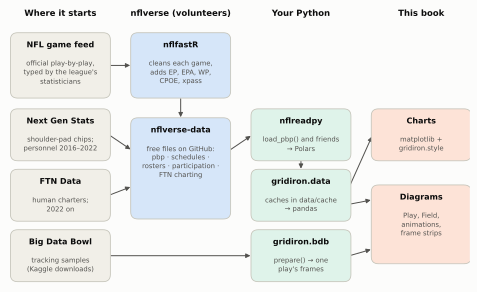
Hold on to the shape of that picture. nflverse is a republisher, not a source: it does not chart games itself. The play-by-play reflects what the league’s statisticians wrote. The personnel and formation data reflect what Next Gen Stats (the league’s tracking system, which follows radio chips in every player’s shoulder pads; see Tracking Data and the Big Data Bowl) or FTN’s charters recorded. When those suppliers make a mistake, or change how they record something, nflverse inherits it. The models, on the other hand, are nflverse’s own. When this book quotes EPA or win probability, it is quoting nflfastR’s models, which are good, public and documented, but are one model among several. ESPN’s win probability on a broadcast is a different model and will not match to the decimal.
ImportantWhy it exists
Before free play-by-play, serious football analysis lived inside teams and a few paid services. You could read that “teams pass too much on first down” but you could not check it. A public, reproducible table changes the argument: anyone can run the numbers, find the flaw in someone else’s, and publish a better version. The cost is that you inherit the data’s quirks, and this chapter is mostly about those quirks. The trade is worth it.
Installing nflreadpy and loading your first season
On your own machine, the whole setup is one install and two lines of Python:
# In a terminal: pip install nflreadpy pandas pyarrow (or: uv add nflreadpy pandas pyarrow)
import nflreadpy as nfl
plays = nfl.load_pbp([2025]) # a Polars DataFrame, one row per play
plays_pd = plays.to_pandas() # the same data as pandas (needs pyarrow)The first call downloads the season from nflverse’s GitHub releases, a Parquet file of about 20 megabytes, so it takes a few seconds. Every loader takes a list of seasons, a single season, or True for everything available.
This book wraps nflreadpy in a tiny module, gridiron.data, so that every chapter shares one cache on disk. nfl() returns the nflreadpy module, already pointed at that cache, and pbp(seasons, columns=[...]) loads seasons, keeps the columns you name and hands back pandas. Without gridiron, the plain nflreadpy versions are:
import nflreadpy as nfl # instead of nflr = nfl()
hist = nfl.load_pbp(seasons).select(cols).to_pandas() # instead of pbp(seasons, columns=cols)nflr = nfl() # the nflreadpy module, pointed at data/cache
raw25 = nflr.load_pbp([2025]) # Polars
print(type(raw25).__name__, f"{raw25.height:,} rows x {raw25.width} columns")DataFrame 48,771 rows x 372 columnsPolars or pandas?
nflreadpy returns Polars data frames. Polars is a newer data-frame library, written in Rust, that stores each column as one block of memory and runs operations in parallel; on a ten-season load it is noticeably faster than pandas and uses less memory. Most Python tutorials, and most of this book, use pandas, because it is what most readers know. You can work in either. Here is the same question, “how often did offenses pass on each down in the 2025 regular season?”, asked both ways:
# Polars: chain expressions on the frame nflreadpy returned
by_down_pl = (
raw25.filter((pl.col("season_type") == "REG")
& pl.col("play_type").is_in(["pass", "run"])
& pl.col("down").is_not_null())
.group_by("down")
.agg(pl.col("pass").mean().alias("pass_rate"), pl.len().alias("plays"))
.sort("down")
)
print(by_down_pl)
# pandas: convert once, then the familiar idioms
df25 = raw25.to_pandas()
reg25 = df25[(df25.season_type == "REG") & df25.play_type.isin(["pass", "run"])
& df25.down.notna()]
print(reg25.groupby("down")["pass"].agg(pass_rate="mean", plays="size").round(3))shape: (4, 3)
┌──────┬───────────┬───────┐
│ down ┆ pass_rate ┆ plays │
│ --- ┆ --- ┆ --- │
│ f64 ┆ f64 ┆ u32 │
╞══════╪═══════════╪═══════╡
│ 1.0 ┆ 0.497722 ┆ 14267 │
│ 2.0 ┆ 0.617417 ┆ 10863 │
│ 3.0 ┆ 0.785032 ┆ 6801 │
│ 4.0 ┆ 0.6678 ┆ 882 │
└──────┴───────────┴───────┘
pass_rate plays
down
1.0 0.498 14267
2.0 0.617 10863
3.0 0.785 6801
4.0 0.668 882The answers are identical, as they should be. To make the conversion painless, convert after you have selected the columns you need (raw25.select([...]).to_pandas()), because a 372-column frame is mostly columns you will never touch; gridiron.data.pbp(seasons, columns=[...]) does exactly that. And remember that Polars has no index: if pandas code does .loc[...] on the result of a groupby, it is relying on the index pandas created, which Polars never had.
The cache, and the current season
nflreadpy keeps what it downloads. By default the cache lives in memory for 24 hours, so a second load in the same session is instant and a new session downloads again. The course instead caches on disk for a year, so the book can be rebuilt without fetching ten seasons every time:
from nflreadpy.config import update_config
update_config(cache_mode="filesystem", cache_dir="data/cache",
cache_duration=60 * 60 * 24 * 365) # seconds; the course keeps files a yearA year is right for completed seasons, which change rarely. It is wrong for the season in progress. nflverse refreshes the current season’s play-by-play as games are played, so during the season you want a short cache (say cache_duration=6 * 60 * 60, six hours) or a fresh download (nflreadpy.clear_cache()). The Sunday notebook at the end of the chapter does exactly that.
CautionCommon misconception
“The Python package for NFL data is nfl_data_py.” It was, and thousands of tutorials and notebooks still use it (import nfl_data_py as nfl; nfl.import_pbp_data([2023])). It is now archived and unmaintained, so it will drift away from the data as nflverse changes its files. Use nflreadpy: the function names start with load_ instead of import_, it returns Polars instead of pandas, and otherwise the data is the same nflverse data.
Anatomy of a play-by-play row
Here is Walker’s run as nflverse records it, a handful of its 372 columns:
walker = df25[(df25.game_id == "2025_22_SEA_NE") & (df25.play_id == 1015)].iloc[0]
MEANING = {"game_id": "season _ week _ away team _ home team", "play_id": "the play's number in the game",
"qtr": "quarter", "time": "game clock at the snap", "posteam": "team with the ball",
"down": "down", "ydstogo": "yards to the line to gain",
"yardline_100": "yards to the opponent's goal line", "play_type": "kind of play",
"yards_gained": "yards gained on the play", "ep": "expected points before the snap",
"epa": "expected points added by the play",
"wp": "offense's win probability before the snap"}
FMT = {"play_id": "{:.0f}", "qtr": "{:.0f}", "down": "{:.0f}", "ydstogo": "{:.0f}",
"yardline_100": "{:.0f}", "yards_gained": "{:.0f}", "ep": "{:.2f}", "epa": "{:+.2f}",
"wp": "{:.2f}"}
md_table(pd.DataFrame({"column": list(MEANING),
"value": [FMT.get(c, "{}").format(walker[c]) for c in MEANING],
"meaning": list(MEANING.values())}))| column | value | meaning |
|---|---|---|
| game_id | 2025_22_SEA_NE | season _ week _ away team _ home team |
| play_id | 1015 | the play’s number in the game |
| qtr | 2 | quarter |
| time | 14:04 | game clock at the snap |
| posteam | SEA | team with the ball |
| down | 2 | down |
| ydstogo | 10 | yards to the line to gain |
| yardline_100 | 76 | yards to the opponent’s goal line |
| play_type | run | kind of play |
| yards_gained | 30 | yards gained on the play |
| ep | 0.12 | expected points before the snap |
| epa | +2.62 | expected points added by the play |
| wp | 0.53 | offense’s win probability before the snap |
Read it left to right and it is a scorebug plus a result. game_id names the game (season, week, away team, home team: Seattle was the designated away team), and play_id numbers the play within it. Seattle (posteam, the team with the ball) has second down (down) and 10 to go (ydstogo) at its own 24, which nflverse writes as yardline_100 = 76; the next section explains why. The play was a run that gained 30 yards. Before the snap the situation was worth 0.12 expected points (ep); the run added 2.62 (epa), because it turned second-and-10 deep in Seattle’s half into first-and-10 in New England’s. Before the snap, nflfastR’s win probability model gave Seattle a 53% chance of winning (wp), its estimate from the score, the clock, the down, distance and field position, and the timeouts left. It deliberately ignores the betting line; a sister column, vegas_wp, folds in the pre-game point spread and, because Seattle was favoured, gives it 72%.
The other 359 columns fall into a few families. You will use perhaps forty of them regularly, so it pays to know which family to look in. The book sorts them with a few name patterns (folded below; the sorting is the book’s, not nflverse’s):
Show the column-family patterns and the example values
KEYS = {"play_id", "game_id", "old_game_id", "home_team", "away_team", "season_type", "week",
"game_date", "season", "nfl_api_id", "order_sequence"}
SITUATION = {"posteam", "posteam_type", "defteam", "side_of_field", "yardline_100", "yrdln",
"quarter_seconds_remaining", "half_seconds_remaining", "game_seconds_remaining",
"game_half", "qtr", "down", "goal_to_go", "time", "ydstogo", "home_timeouts_remaining",
"away_timeouts_remaining", "posteam_timeouts_remaining",
"defteam_timeouts_remaining", "total_home_score", "total_away_score",
"posteam_score", "defteam_score", "score_differential"}
MODEL = r"(^|_)(ep|epa|wp|wpa|cp|cpoe|xpass|pass_oe)$|_prob$|^xyac|_epa$|_wpa$|^vegas|_wp$"
PLAYERS = r"player_id|player_name|_player_|jersey|^(passer|rusher|receiver|name|id)$|_id$|fantasy"
GAME = (r"^drive|^fixed_drive|^series|stadium|roof|surface|^temp$|^wind$|weather|_line$|coach"
r"|^(location|result|total|div_game|start_time|time_of_day|home_score|away_score)$"
r"|home_opening_kickoff|end_clock_time|end_yard_line")
def family(col):
if col in KEYS:
return "Keys"
if col in SITUATION:
return "Situation before the snap"
if re.search(MODEL, col):
return "Model estimates"
if re.search(GAME, col):
return "Drive and game"
if re.search(PLAYERS, col):
return "Players"
return "What happened"
def schema_examples(w):
"""A few columns per family, with this row's values, for the schema picture."""
return {
"Keys": [("game_id", w.game_id), ("play_id", f"{w.play_id:.0f}"), ("season", w.season),
("week", w.week), ("season_type", w.season_type)],
"Situation before the snap": [("posteam", w.posteam),
("qtr · time", f"{w.qtr:.0f} · {w.time}"),
("down", f"{w.down:.0f}"), ("ydstogo", f"{w.ydstogo:.0f}"),
("yardline_100", f"{w.yardline_100:.0f}")],
"What happened": [("play_type", w.play_type), ("yards_gained", f"{w.yards_gained:.0f}"),
("shotgun", f"{w.shotgun:.0f}"), ("run_location", w.run_location),
("first_down", f"{w.first_down:.0f}")],
"Model estimates": [("ep", f"{w.ep:.2f}"), ("epa", f"{w.epa:+.2f}"), ("wp", f"{w.wp:.2f}"),
("wpa", f"{w.wpa:+.3f}"), ("xpass", f"{w.xpass:.2f}")],
"Players": [("rusher", w.rusher), ("rusher_jersey_number", f"{w.rusher_jersey_number:.0f}"),
("rusher_player_id", w.rusher_player_id), ("passer", "(none)"),
("…", "≈100 more")],
"Drive and game": [("drive", f"{w.drive:.0f}"), ("series", f"{w.series:.0f}"),
("fixed_drive_result", w.fixed_drive_result),
("spread_line", f"{w.spread_line:+.1f}"), ("roof", w.roof)],
}fam = pd.Series({c: family(c) for c in raw25.columns})
counts = fam.value_counts()
print(counts.to_string())
draw_schema(schema_examples(walker), counts, walker.desc)
plt.show()What happened 125
Players 102
Model estimates 64
Drive and game 46
Situation before the snap 24
Keys 11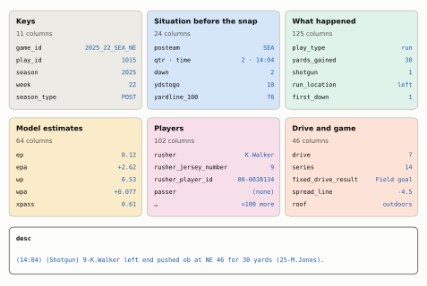
The situation columns are the scorebug, so they are what you filter on. The model columns are where the analysis is, and each one has a plain meaning:
epandepa: expected points before the snap, and how much the play changed them.successis 1 whenepais positive, so its mean is the success rate.wpandwpa: win probability before the snap, and win probability added, the change the play caused. Walker’s run moved Seattle’s chance of winning by +7.7 points (wpa= +0.077).cpandcpoe, on passes only: completion probability, the model’s chance that a throw of that depth and direction in that situation is caught, and completion percentage over expected, caught (1 or 0) minuscp.xpassandpass_oe: the model’s chance that an average offense drops back in this situation, and pass over expected, the play’spassflag minusxpass, in percentage points. Second-and-10 at your own 24 hasxpass= 0.61: a 61% chance of a dropback. Seattle ran, sopass_oe= -61. Averaged over a team’s snaps, that is PROE.
They are estimates, not facts. Expected Points, EPA, and Success Rate builds the first of those models from scratch, Win Probability and Decision Analysis the second, and Tendencies: PROE, Personnel, Motion, and Coverage the last.
Here are the columns you will reach for most, by job. Keep this table open while you work:
| Job | Columns |
|---|---|
| Identify the play | game_id, play_id, season, week, season_type, posteam, defteam |
| The situation | down, ydstogo, yardline_100, qtr, half_seconds_remaining, score_differential, goal_to_go |
| What kind of play | play_type, pass, rush, qb_dropback, qb_scramble, sack, shotgun, no_huddle, qb_kneel, qb_spike, two_point_attempt |
| The result | yards_gained, first_down, touchdown, interception, fumble_lost, complete_pass, air_yards, yards_after_catch, pass_location, pass_length, run_location, run_gap, penalty, penalty_type |
| The value | ep, epa, success, wp, wpa, cpoe, xpass, pass_oe |
| Who | passer_player_name, rusher_player_name, receiver_player_name, passer_id, rusher_id, receiver_id |
| In words | desc |
NoteMadden vs. real life
In Madden every play has a name: you pick “Inside Zone” or “PA Boot Over” from a menu, and the game knows what you called. Real play-by-play never records the call. It records what happened (“left end for 30 yards”), in the official statisticians’ words, and nothing about whether it was outside zone, a toss or a run-pass option. Even the flags that sound like scheme (shotgun, no_huddle, run_location) are describing the result, not reading the playbook. The scheme labels you’ll meet later in this chapter come from human charters watching film, and they are judgement calls.
A row is not always a play
The table has one row per event in the league’s log, and not every event is a run or a pass. Here is the 2025 file by play_type:
pt = (df25.play_type.fillna("(none)").value_counts().rename_axis("play_type")
.reset_index(name="rows"))
pt["share"] = pt.rows / pt.rows.sum()
md_table(pt, digits=3)| play_type | rows | share |
|---|---|---|
| pass | 19,737 | 0.405 |
| run | 14,895 | 0.305 |
| no_play | 4,723 | 0.097 |
| kickoff | 2,927 | 0.060 |
| punt | 2,042 | 0.042 |
| (none) | 1,445 | 0.030 |
| extra_point | 1,330 | 0.027 |
| field_goal | 1,140 | 0.023 |
| qb_kneel | 452 | 0.009 |
| qb_spike | 80 | 0.002 |
About 70% of the rows are runs and passes. The rest are kickoffs, punts, extra points and field goals; kneel-downs and spikes; no_play; and rows with no play_type at all, which are bookkeeping: the start of the game, the end of each quarter and of the game, and the odd weather delay. no_play covers three different things: a play that was run and then wiped out by an accepted penalty (a holding call, say), a pre-snap foul after which no play was run at all (a false start, the most common penalty on these rows), and a timeout. Every analysis starts by deciding which of these to keep.
yardline_100: one number for field position
yardline_100 is the number of yards from the ball to the goal line the offense is attacking. Your own 25 is 75; midfield is 50; the opponent’s 10 is 10. The broadcast’s way of saying it, “SEA 24,” needs you to know which team has the ball and which way it is going; yrdln, the column that stores the broadcast form, has the same problem. yardline_100 doesn’t. The figure also shows the third scale you’ll meet, the Big Data Bowl’s x, which measures the whole field from 0 to 120 including both 10-yard end zones, so the goal line the offense attacks sits at x = 110 and the ball sits at x = 110 − yardline_100:
Show the plotting code
def plot_yardline(start, gain, to_go):
"""Walker's run on a full field, labelled in the three field-position scales."""
x0, x1 = 110 - start, 110 - (start - gain) # BDB x for an offense moving +x
fld = Field(orient="horizontal", los=x0, window=(-x0, 120 - x0), to_go=to_go, width_in=6.5)
ax = fld.ax
yb = 22.0 # ball on the near side of the field
ax.add_patch(FancyArrowPatch((x0, yb), (x1, yb), arrowstyle="-|>", mutation_scale=12,
color=style.OFFENSE_DARK, lw=2.4, zorder=5))
ax.add_patch(Circle((x0, yb), 1.0, color=style.BALL, zorder=6))
BOX = dict(boxstyle="round,pad=0.3", fc=style.SURFACE, ec=style.BASELINE, lw=0.6)
ax.text(x0, 33.0, f"yrdln: 'SEA {110 - start - 10:.0f}'\nyardline_100: {start:.0f}\nBDB x: {x0:.0f}",
ha="center", va="center", fontsize=7, color=style.INK, bbox=BOX, zorder=8)
ax.text(x1, 33.0, f"yrdln: 'NE {start - gain:.0f}'\nyardline_100: {start - gain:.0f}\n"
f"BDB x: {x1:.0f}", ha="center", va="center", fontsize=7, color=style.INK, bbox=BOX,
zorder=8)
ax.text((x0 + x1) / 2, yb + 1.6, f"+{gain:.0f} yards", ha="center", va="bottom", fontsize=7.5,
fontweight="bold", color=style.OFFENSE_DARK, zorder=8)
for gx, txt in [(5, "Seattle's\nend zone\nx 0–10"), (115, "New England's\nend zone\nx 110–120")]:
ax.text(gx, 26.7, txt, ha="center", va="center", fontsize=6.5, color=style.INK_2,
rotation=90, zorder=8)
for yl in range(100, -1, -10): # yardline_100 ruler near the far sideline
ax.text(110 - yl, 3.2, f"{yl}", ha="center", va="center", fontsize=6.3,
color=style.OFFENSE_DARK, zorder=8)
ax.text(60, 6.6, "yardline_100", ha="center", va="center", fontsize=6.5, style="italic",
color=style.OFFENSE_DARK, zorder=8)
ax.text(52, 47.5, "Seattle moving this way →", ha="center", va="center", fontsize=7.5,
color=style.INK_2, zorder=8)
return fldstart, gain = float(walker.yardline_100), float(walker.yards_gained)
print(f"x at the snap = 110 - {start:.0f} = {110 - start:.0f}; "
f"x at the end = 110 - {start - gain:.0f} = {110 - (start - gain):.0f}")
plot_yardline(start, gain, float(walker.ydstogo))
plt.show()x at the snap = 110 - 76 = 34; x at the end = 110 - 46 = 64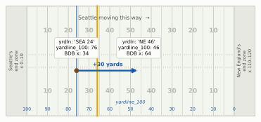
ImportantWhy it exists
Football’s spoken language for field position is relative (“own 24,” “plus-46,” “the 30 going in”), and the same words mean different spots for the two teams. Every computation that touches field position (expected points, red-zone filters, “how far from the end zone did this drive start?”) needs a single scale that runs in the offense’s direction. yardline_100 is that scale. yardline_100 <= 20 is the red zone for whichever team has the ball, and 110 - yardline_100 puts the ball on the Big Data Bowl’s x axis for an offense moving toward higher x, which is how this book’s diagrams are drawn. The trade-off is that it is useless for “which end of the stadium?” questions (wind, sun, the home crowd), for which you need yrdln and posteam together.
Flags, not categories: pass, rush and play_type
play_type sounds like the answer to “was it a run or a pass?” It isn’t quite. A scramble is a quarterback who drops back to throw, finds no one open and runs; nflverse files it as play_type == "run", because the ball was carried, not thrown. A sack is play_type == "pass". The 0/1 flag columns describe the play the offense set out to run:
flagged = df25[df25.season_type == "REG"].copy()
flagged["kind"] = np.select( # first match wins, so no-plays are checked first
[flagged.play_type == "no_play", flagged.two_point_attempt == 1, flagged.qb_scramble == 1,
flagged.sack == 1, flagged.qb_kneel == 1, flagged.qb_spike == 1,
flagged.play_type == "pass", flagged.play_type == "run"],
["no-play", "two-point try", "scramble", "sack", "kneel-down", "spike",
"pass", "designed run"], "other")
keep = ["designed run", "pass", "sack", "scramble", "two-point try", "kneel-down", "spike",
"no-play"]
flag_tab = (flagged[flagged.kind.isin(keep)]
.groupby("kind")
.agg(plays=("play_id", "size"), play_type=("play_type", lambda s: s.mode()[0]),
has_down=("down", lambda s: s.notna().mean()), pass_flag=("pass", "mean"),
rush_flag=("rush", "mean"), qb_dropback=("qb_dropback", "mean"))
.reindex(keep).reset_index())
md_table(flag_tab)| kind | plays | play_type | has_down | pass_flag | rush_flag | qb_dropback |
|---|---|---|---|---|---|---|
| designed run | 13,079 | run | 1.00 | 0.00 | 1.00 | 0.00 |
| pass | 17,358 | pass | 1.00 | 1.00 | 0.00 | 1.00 |
| sack | 1,287 | pass | 1.00 | 1.00 | 0.00 | 1.00 |
| scramble | 1,089 | run | 1.00 | 1.00 | 0.00 | 1.00 |
| two-point try | 128 | pass | 0.00 | 0.76 | 0.24 | 0.75 |
| kneel-down | 433 | qb_kneel | 1.00 | 0.00 | 0.00 | 0.00 |
| spike | 79 | qb_spike | 1.00 | 0.00 | 0.00 | 0.00 |
| no-play | 4,538 | no_play | 0.55 | 0.25 | 0.07 | 0.00 |
Read the table row by row and the logic is clear. pass == 1 marks every dropback, a play on which the quarterback set up to pass: real passes, sacks and scrambles. rush == 1 marks only designed runs, including quarterback runs that were called as runs. Two-point tries have no down, so a down.notna() filter quietly drops them, which is usually what you want. Kneel-downs and spikes get their own play_type and neither flag. And no_play rows sometimes carry a flag (a run called back for holding is still marked as a run; so are the 71 scrambles wiped out by penalties, which is why they sit in the no-play row, not the scramble row) and sometimes don’t (a timeout, a false start).
This is why this book counts a “pass” as pass == 1, and says so in its captions. It is the closest the data comes to what the offense called. Count passes with play_type == "pass" and you lose the scrambles, about 1,089 plays in 2025, and every pass rate comes out about three points low.
Two cautions keep the flag honest. Screens and play-action passes are passes under it, which is right for play-calling but worth remembering when a “pass rate” includes a lot of throws behind the line. And on a run-pass option (RPO) the call was both: the quarterback decides after the snap, and pass and rush record his decision, not the call. The only place the RPO call itself shows up is FTN’s is_rpo flag, which you’ll meet below.
Filtering to “real” plays
Almost every question in this book starts from the same funnel: the regular season, runs and dropbacks only, with a down, and (for most questions) without garbage time. Here is what each step removes from the 2025 file:
Show the plotting code
def plot_funnel(steps):
"""Horizontal bars: rows surviving each filter step, with what the step removed."""
fig, ax = plt.subplots(figsize=(6.5, 2.7))
ax.set_axisbelow(True)
ys = np.arange(len(steps))[::-1]
for y, (lab, frame, why) in zip(ys, steps):
late = lab.startswith(("Win", "Not")) # the two garbage-time steps
ax.barh(y, len(frame), color=style.DEFENSE if late else style.OFFENSE, height=0.62)
ax.text(len(frame) - 600, y, f"{len(frame):,}", ha="right", va="center", fontsize=7.5,
color="white", fontweight="bold")
if why:
ax.text(len(frame) + 700, y, f"− {why}", ha="left", va="center", fontsize=7,
color=style.INK_2)
ax.set_yticks(ys, [st[0] for st in steps], fontsize=7.8)
ax.set_xlim(0, 80000)
ax.set_xticks([0, 10000, 20000, 30000, 40000, 50000], ["0", "10k", "20k", "30k", "40k", "50k"],
fontsize=7.5)
ax.set_xlabel("rows remaining", fontsize=8)
ax.grid(axis="y", visible=False)
ax.spines["left"].set_visible(False)
return figs0 = df25
s1 = s0[s0.season_type == "REG"]
s2 = s1[s1.play_type.isin(["pass", "run"])]
s3 = s2[s2.down.notna()]
s4 = s3[s3.wp.between(0.10, 0.90)]
s5 = s4[s4.half_seconds_remaining > 120]
plot_funnel([("Every row in the 2025 file", s0, ""),
("Regular season only", s1, "playoff games"),
("Runs and passes (play_type)", s2, "kicks, no-plays, kneels, spikes, timeouts"),
("…that have a down", s3, "two-point tries"),
("Win probability 10–90%", s4, "lopsided games"),
("Not in the last 2 min of a half", s5, "two-minute drills")])
plt.show()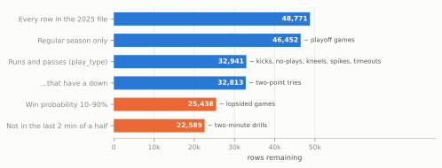
The first four steps are housekeeping, but each has a reason. Regular season only, because the playoffs are a different sample: 12 or 14 teams instead of 32, at most four games each, against better opponents and with elimination on the line, so mixing them in tilts any team’s numbers toward how far it went. (Super Bowl LX is this chapter’s example play; it is the exception, not the data.) play_type in pass or run may look odd after the last section warned you off play_type, but it is the right tool for choosing rows: scrambles live inside “run” and sacks inside “pass”, so every dropback survives, and you then classify the rows with the pass flag. The step does drop no-play rows, including runs and passes wiped out by penalties. nflfastR’s beginner’s guide filters rows with pass == 1 | rush == 1 instead, which keeps those called-back plays; Drill 3 below asks when that matters. A down removes two-point tries.
The last two steps are a choice, and they need explaining.
Why garbage time gets thrown out
Think about what a team does when it trails by 20 with eight minutes left. It throws on nearly every down, because runs burn clock it doesn’t have, and the defense, which knows it, drops eight players into coverage and gives up underneath completions all day. Meanwhile the team that leads by 20 runs into a stacked box to keep the clock moving. Neither side is running its game plan. If you leave those plays in, a team that spent the second half of a blowout throwing will look pass-happy, and a team that spent it running out the clock will look like a running team. The score made those calls, not the coaches’ preferences. It bends efficiency too: a trailing offense collecting soft underneath yards against a deep shell looks better than it is, and the defense that is protecting a big lead is conceding yards on purpose. Here is how strongly the score pulls on the most ordinary situation in football, first-and-10:
HCOLS = ["season", "season_type", "week", "game_id", "play_id", "qtr", "time", "posteam",
"down", "ydstogo", "yardline_100", "play_type", "pass", "rush", "shotgun", "wp",
"half_seconds_remaining", "epa", "first_down", "yards_gained", "penalty_type"]
hist = pbp(range(1999, 2026), columns=HCOLS) # 27 seasons, about 1.3 million rows
hist = hist[hist.season_type == "REG"]
snaps = hist[hist.play_type.isin(["pass", "run"]) & hist.down.notna()].copy()Show the plotting code
def plot_wp_pass(wp_tab):
"""Bars of first-and-10 pass rate by win-probability decile, with the kept band shaded."""
mids = np.arange(5, 100, 10)
fig, ax = plt.subplots(figsize=(6.5, 2.8))
ax.set_axisbelow(True)
ax.axvspan(10, 90, color=style.OFFENSE_TINT, alpha=0.6, lw=0, zorder=0)
ax.text(50, 83, "kept by the garbage-time filter", ha="center", fontsize=7.5, color=style.INK_2)
cols = [style.DEFENSE if m < 10 or m > 90 else style.OFFENSE for m in mids]
ax.bar(mids, wp_tab["mean"] * 100, width=7.6, color=cols, zorder=2)
for m, v in zip(mids, wp_tab["mean"]):
ax.text(m, v * 100 + 1.5, f"{v:.0%}", ha="center", va="bottom", fontsize=7.3, color=style.INK)
ax.set_xticks(range(0, 101, 10), [f"{v}%" for v in range(0, 101, 10)], fontsize=7.5)
ax.set_xlim(0, 100)
ax.set_ylim(0, 90)
ax.set_xlabel("offense's win probability before the snap", fontsize=8)
ax.set_ylabel("first-and-10 pass rate (%)", fontsize=8)
ax.grid(axis="x", visible=False)
return figf10 = snaps[snaps.season.between(2016, 2025) & (snaps.down == 1) & (snaps.ydstogo == 10)
& (snaps.half_seconds_remaining > 120) & snaps.wp.notna()].copy()
f10["bin"] = pd.cut(f10.wp, np.linspace(0, 1, 11)) # ten win-probability bins
wp_tab = f10.groupby("bin", observed=True)["pass"].agg(["mean", "size"])
plot_wp_pass(wp_tab)
plt.show()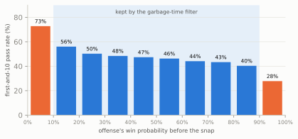
The middle of the chart slopes gently, and the ends fall off a cliff. That middle is what the garbage-time filter tries to keep: plays where the game is still in doubt, so the call reflects the plan. This book’s version keeps plays where the offense’s win probability is between 10% and 90% and that are not in the last two minutes of either half. The win-probability part removes blowouts; the clock part removes the two-minute drill, where even a close game is played by the clock, with hurry-up passing and timeouts.
There is no single right cut-off, only a trade between keeping the plays that tell you about the game plan and keeping enough plays to measure anything. This book uses two, and here is the rule for choosing:
- 10–90% (the garbage-time filter) is the default, and the filter for efficiency: EPA, success rate, yards per play, and league-wide averages over many seasons. Expected Points, EPA, and Success Rate uses it for every team number.
- 20–80% is for comparing play-callers’ choices, where the score’s pull starts earlier and small differences between teams are the point. Tendencies: PROE, Personnel, Motion, and Coverage defines it as the neutral situation, usually on first and second down only. Earlier chapters used the same idea before it had a formal name: the pass-rate grid in Downs, Distance, and Field Position (20–80%, every down) and the play-calling charts in Personnel (20–80%, first and second down).
Public analysts use cut-offs in the same neighbourhood; nflfastR’s own beginner’s guide, for example, measures early-down pass rates at 20% to 80%, on first and second down in the first half, outside its last two minutes.7 Whatever you choose, the choice changes the numbers, so you state it. The table below compares no filter with the two win-probability ranges, each combined with the same clock rule:
s25 = snaps[snaps.season == 2025]
late = s25.half_seconds_remaining <= 120
CHOICES = {"none": s25, # every run and dropback
"10–90% (default)": s25[s25.wp.between(0.10, 0.90) & ~late], # garbage-time filter
"20–80% (neutral)": s25[s25.wp.between(0.20, 0.80) & ~late]} # play-calling
choice_tab = pd.DataFrame({name: d.groupby("down")["pass"].mean() for name, d in CHOICES.items()}).T
choice_tab.columns = [f"down {int(c)}" for c in choice_tab.columns]
shown = choice_tab.map(lambda v: f"{v:.1%}")
shown.insert(0, "plays", [f"{len(d):,}" for d in CHOICES.values()])
md_table(shown.reset_index(names="WP filter"))| WP filter | plays | down 1 | down 2 | down 3 | down 4 |
|---|---|---|---|---|---|
| none | 32,813 | 49.8% | 61.7% | 78.5% | 66.8% |
| 10–90% (default) | 22,589 | 46.4% | 59.6% | 79.5% | 56.8% |
| 20–80% (neutral) | 18,426 | 46.0% | 59.4% | 79.7% | 54.8% |
Filtering garbage time removes about three plays in ten and moves first-down pass rate by about three points, which is the size of the differences many arguments are about. Fourth down moves most, from 67% passes to 57%, because so many fourth-down plays are desperate throws by teams that are losing. The two filters agree within two points on every down; the unfiltered numbers are the odd ones out. That is why a league-wide history can use the default, while a comparison of two play-callers, where two points is the difference, should use the stricter one.
CautionCommon misconception
“Filtering is cheating: you’re throwing away data you don’t like.” Filtering is choosing the question. “How often does this team pass when the game is in doubt?” and “how often does this team pass?” are different questions, and both are legitimate. The cheating version is choosing the filter after seeing which one gives the answer you wanted, or not saying which you used. A filter stated in a caption is a method; one hidden in the code is a thumb on the scale.
Beyond play-by-play: schedules, rosters, participation and FTN
Play-by-play tells you what happened. It doesn’t tell you who was on the field, how they lined up, or whether the quarterback faked a handoff first. For that, nflverse publishes other tables, each with its own coverage in time. Knowing which seasons each one covers is half the battle:
draw_timeline()
plt.show()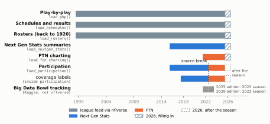
Each table joins to play-by-play on a key, and the key is the first thing to learn about it.
One key needs a word first, because three game IDs float around. game_id is nflverse’s readable key (2025_22_SEA_NE: season, week, away team, home team). Participation and FTN call the same key nflverse_game_id. old_game_id is the league’s own ten-digit ID (2026020800, the date plus a game number), which is the one the Big Data Bowl files use. Team abbreviations are the franchise’s current ones in every season, so posteam == "LV" finds the Raiders in their Oakland years too, and "LA" the Rams in their St. Louis years.
Schedules (load_schedules()) have one row per game, keyed by game_id, with the final score, the betting line, the stadium, the roof, the weather, the starting quarterbacks, the head coaches and even the referee. They are how you attach game-level facts (was it a divisional game? on short rest?) to plays.
Rosters (load_rosters()) have one row per player per team per season, keyed by gsis_id, the league’s player ID (the 00-00… strings). Play-by-play stores the same ID in two sets of player columns, so a merge gives you a player’s position, size, college or draft slot. The passer_player_id, rusher_player_id and receiver_player_id columns follow the box score: a scrambling quarterback is the rusher_player_id. The shorter passer_id, rusher_id and receiver_id follow the pass and rush flags: a scrambling quarterback is the passer_id, and rusher_id is empty. Use the first set to count a player’s carries the way the box score does, the second to credit dropbacks to the quarterback.
sched = nflr.load_schedules([2025]).to_pandas()
sb = sched[sched.game_id == "2025_22_SEA_NE"]
sb_cols = ["game_id", "gameday", "away_team", "away_score", "home_team", "home_score",
"spread_line", "roof", "away_coach", "home_coach", "referee"]
display(md_table(sb[sb_cols].T.reset_index().set_axis(["column", "value"], axis=1).astype(str)))
roster = nflr.load_rosters([2025]).to_pandas()
carriers = (df25[(df25.game_id == "2025_22_SEA_NE") & (df25.play_type == "run") & (df25.rush == 1)]
.merge(roster[["gsis_id", "position", "college"]].drop_duplicates("gsis_id"),
left_on="rusher_player_id", right_on="gsis_id", how="left")
.groupby(["posteam", "rusher", "position", "college"])
.agg(carries=("play_id", "size"), yards=("yards_gained", "sum"),
epa=("epa", "sum"))
.reset_index().sort_values("carries", ascending=False).head(5))
display(md_table(carriers))| column | value |
|---|---|
| game_id | 2025_22_SEA_NE |
| gameday | 2026-02-08 |
| away_team | SEA |
| away_score | 29 |
| home_team | NE |
| home_score | 13 |
| spread_line | -4.5 |
| roof | outdoors |
| away_coach | Mike Macdonald |
| home_coach | Mike Vrabel |
| referee | Shawn Smith |
| posteam | rusher | position | college | carries | yards | epa |
|---|---|---|---|---|---|---|
| SEA | K.Walker | RB | Michigan State; Wake Forest | 27 | 135 | -2.04 |
| NE | R.Stevenson | RB | Oklahoma; Cerritos College | 7 | 23 | -1.60 |
| NE | T.Henderson | RB | Ohio State | 6 | 19 | -1.31 |
| SEA | G.Holani | RB | Boise State | 2 | 6 | 0.17 |
| SEA | R.Shaheed | WR | Weber State | 1 | -5 | -1.28 |
(Seattle was the designated road team, and spread_line is in the home team’s favour, so −4.5 means the “home” Patriots were 4.5-point underdogs.) Walker’s line from the merge matches the box score (27 carries, 135 yards), which is the first check you should always make after a join: does a total you already know come out right? It also holds a small surprise. The game’s MVP totals slightly negative EPA on his carries. Only 26% of them were successes (positive EPA), his median carry gained 2 yards, and 15 of his 27 gained two yards or fewer; each of those cost a little, and the 30- and 29-yard bursts did not quite pay for them. That is the gap between yards and value that Expected Points, EPA, and Success Rate is about.
Participation data (load_participation()) is the table that powers the personnel and formation charts in Part 2. It has one row per play, keyed by nflverse_game_id and play_id, and lists the offensive and defensive personnel, the formation, the number of defenders in the box, the number of pass rushers, the players’ IDs and, from 2023, their names, positions and jersey numbers. For most dropbacks from 2018 on it also carries the coverage: defense_man_zone_type (man or zone) and defense_coverage_type (COVER_1, COVER_3 and so on). Everything you do with it is shaped by where it comes from: two suppliers, Next Gen Stats for 2016–2022 and FTN from 2023, and it is published only after a season ends: FTN releases each season’s file under a Creative Commons licence (CC-BY-SA 4.0) once the season is over, so the 2026 file will not exist until about February 2027.8
FTN charting data (load_ftn_charting()) is the other half of FTN’s work: a human charter’s notes on every play, from 2022 on, updated weekly during the season. It records where the quarterback lined up (qb_location: U for under center, S for shotgun, P for pistol), how many players were in the backfield and in the box, whether there was motion, play-action, a screen or an RPO, how many defenders blitzed, and judgement calls on the throw (catchable? contested? dropped? interception-worthy?). It joins on nflverse_game_id and nflverse_play_id. It does not have the coverage; that lives only in participation.9
Watch two of its definitions. is_motion means motion before or at the snap, not only motion at the snap, so it is not the same thing as the “motion at the snap” rates you’ll hear on broadcasts, nor the same as PFF’s shift-and-motion rate. And there is no flag for the tush push: use is_qb_sneak, which covers both the classic sneak and the pushed version. FTN does not publish how often two of its charters agree on the judgement columns (catchable, contested, interception-worthy), so treat them as one trained viewer’s opinion: good for season totals, shaky for any single play.
Put the two timetables together and you get a gap that matters for the Sunday notebook: during the season, nflverse has no personnel groupings. Participation for 2026 arrives after the season; FTN charting arrives weekly but records the backfield count (n_offense_backfield), the quarterback’s spot and the box count, not how many backs and tight ends were on the field. If you want this week’s personnel, you log it yourself from the broadcast, which is exactly what the prediction log is for.
Joining participation, and the 2022-to-2023 source break
Joining is one merge. The care is in the checking. Here are ten seasons of runs and dropbacks joined to participation, with the match rate by season:
SEASONS = list(range(2016, 2026))
part = nflr.load_participation(SEASONS).to_pandas()
plays = snaps[snaps.season.isin(SEASONS)]
joined = plays.merge(part, left_on=["game_id", "play_id"],
right_on=["nflverse_game_id", "play_id"], how="left", indicator=True)
check = joined.groupby("season").agg(
plays=("play_id", "size"),
matched=("_merge", lambda s: (s == "both").mean()),
personnel=("offense_personnel", lambda s: s.notna().mean()),
formation=("offense_formation", lambda s: s.notna().mean()),
coverage=("defense_coverage_type", lambda s: s.notna().mean()))
md_table(check.reset_index(), digits=3)| season | plays | matched | personnel | formation | coverage |
|---|---|---|---|---|---|
| 2016 | 32,291 | 1.000 | 1.000 | 0.990 | 0.000 |
| 2017 | 31,987 | 1.000 | 1.000 | 0.992 | 0.000 |
| 2018 | 31,751 | 1.000 | 1.000 | 0.991 | 0.551 |
| 2019 | 32,047 | 1.000 | 1.000 | 0.999 | 0.553 |
| 2020 | 32,444 | 1.000 | 1.000 | 0.996 | 0.551 |
| 2021 | 33,986 | 1.000 | 1.000 | 0.993 | 0.547 |
| 2022 | 33,652 | 1.000 | 1.000 | 0.999 | 0.534 |
| 2023 | 33,836 | 1.000 | 1.000 | 0.997 | 0.610 |
| 2024 | 33,335 | 1.000 | 1.000 | 0.999 | 0.603 |
| 2025 | 32,813 | 1.000 | 1.000 | 0.998 | 0.601 |
Every run and dropback finds its participation row, and almost all of them have personnel and a formation. Coverage is missing for 2016–2017 entirely and present on a little over half of runs and dropbacks after that, because it is charted for dropbacks only. So far, so good. Now look at what the formation column says, season by season:
Show the plotting code
FCOL = {"SHOTGUN": style.OFFENSE, "EMPTY": "#c9c4b8", "PISTOL": style.THIRD,
"SINGLEBACK": "#eda100", "I_FORM": "#e87ba4", "JUMBO / WILDCAT": "#4a3aa7",
"UNDER CENTER": style.DEFENSE}
def plot_formations(fshare):
"""Stacked bars of formation-label shares by season, with the source break marked."""
fig, ax = plt.subplots(figsize=(6.5, 3.2))
ax.set_axisbelow(True)
bottom = np.zeros(len(fshare))
for lab in fshare.columns:
v = fshare[lab].values
ax.bar(fshare.index, v, bottom=bottom, color=FCOL[lab], width=0.72, label=lab,
edgecolor=style.SURFACE, lw=0.5)
for x, b, h in zip(fshare.index, bottom, v):
if h >= 6:
ax.text(x, b + h / 2, f"{h:.0f}", ha="center", va="center", fontsize=6.5,
color="white" if lab not in ("SINGLEBACK", "EMPTY") else style.INK)
bottom += v
ax.axvline(2022.5, color=style.INK, lw=1, ls=(0, (1, 2)))
ax.set_xticks(fshare.index, [str(y) for y in fshare.index], fontsize=7.5)
ax.set_ylim(0, 100)
ax.set_ylabel("share of runs and dropbacks (%)", fontsize=8)
ax.grid(False)
ax.legend(fontsize=6.6, ncol=4, loc="upper center", bbox_to_anchor=(0.5, -0.1), frameon=False)
return figform = joined[joined.offense_formation.notna()].copy()
form["label"] = form.offense_formation.replace({"JUMBO": "JUMBO / WILDCAT",
"WILDCAT": "JUMBO / WILDCAT"})
ORDER = ["SHOTGUN", "EMPTY", "PISTOL", "SINGLEBACK", "I_FORM", "JUMBO / WILDCAT", "UNDER CENTER"]
fshare = pd.crosstab(form.season, form.label, normalize="index").reindex(columns=ORDER,
fill_value=0) * 100
plot_formations(fshare)
plt.show()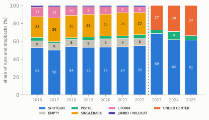
That chart is a source break: a point in a series where the supplier or the method of recording changes, so the two sides are not directly comparable. Nothing in the football explains a formation vocabulary shrinking from seven words to three over one off-season. Next Gen Stats described the backfield; FTN describes the quarterback’s spot. An I-formation and a singleback set are both “UNDER CENTER” now, and an empty backfield, in which the quarterback is nearly always in the shotgun, is now “SHOTGUN.”
The break shows up in other columns too, and each one has its own trap:10
- Personnel strings change format. Through 2022 they read
"1 RB, 2 TE, 2 WR", listing linemen only when there are more than five. From 2023 they list every player by roster position,"1 C, 2 G, 1 QB, 1 RB, 2 T, 2 TE, 2 WR", so any code that splits the string has to handle both, as the reproduction below does. - Coverage labels change. FTN added Cover 9 (a split-field coverage), COMBO (a call that mixes man and zone; see combo coverage) and BLOWN (a coverage the charter judged had broken down), and dropped PREVENT (the soft prevent defense of the last minutes).
- Some columns simply stop.
ngs_air_yardsis empty from 2024 on; use play-by-play’s ownair_yardsinstead, which has no break. - The man-zone split jumps in a way that looks like coding, not football:
Man coverage on 29% of labelled dropbacks in 2022, then 41% and 48% under the new supplier, then back to 31% in 2025. Defenses did not double their man coverage and then abandon it; the charters changed how they called borderline coverages. A chart that ran straight across 2022–2025 would invent a trend. (Tendencies: PROE, Personnel, Motion, and Coverage builds coverage charts with this caveat built in.)
Three rules for a source break
- Mark it. Any chart that crosses 2022–2023 in participation data gets a dotted line and a note, as the personnel chart below does. A reader can then judge the jump for themselves.
- Translate to what both sides can say. When the labels disagree, drop to the coarser category both suppliers can express. Next Gen Stats never said “under center”, but three of its labels mean it: SINGLEBACK, I_FORM and JUMBO all put the quarterback under the center. Collapse them, and the 2016–2022 labels speak FTN’s language.
- Cross-check with an independent source. Play-by-play has its own
shotgunflag, parsed from the statisticians’ play description, and FTN’sqb_locationis a separate charter’s call. If they agree with each other across the years, the trend is real.
Here are rules 2 and 3 at work on the “under-center comeback” that this book describes in The Modern Era. “participation (U)” is the share of snaps whose formation label means under center, translated as in rule 2; “pbp (not gun)” is the share the statisticians did not mark “(Shotgun)”; “FTN (U)” and “FTN (P)” are FTN charting’s under-center and pistol shares. The play-by-play and FTN charting columns come from independent recorders:
UNDER = {"SINGLEBACK", "I_FORM", "JUMBO", "UNDER CENTER"} # labels meaning "QB under center"
ftn = nflr.load_ftn_charting([2022, 2023, 2024, 2025]).to_pandas()
ftn["qb_location"] = ftn.qb_location.astype(str).str.strip()
fj = plays[plays.season >= 2022].merge(
ftn[["nflverse_game_id", "nflverse_play_id", "qb_location", "is_motion", "is_rpo"]],
left_on=["game_id", "play_id"], right_on=["nflverse_game_id", "nflverse_play_id"],
how="left")
xc = pd.DataFrame({
"participation (U)": form.groupby("season").offense_formation.apply(
lambda s: s.isin(UNDER).mean()),
"pbp (not gun)": 1 - plays.groupby("season").shotgun.mean(),
"FTN (U)": fj.groupby("season").qb_location.apply(lambda s: (s == "U").mean()),
"FTN (P)": fj.groupby("season").qb_location.apply(lambda s: (s == "P").mean())})
md_table(xc.map(lambda v: f"{v:.1%}" if pd.notna(v) else "–").reset_index())| season | participation (U) | pbp (not gun) | FTN (U) | FTN (P) |
|---|---|---|---|---|
| 2016 | 35.3% | 35.8% | – | – |
| 2017 | 40.1% | 40.7% | – | – |
| 2018 | 35.8% | 36.1% | – | – |
| 2019 | 35.1% | 35.3% | – | – |
| 2020 | 33.7% | 33.9% | – | – |
| 2021 | 33.5% | 33.8% | – | – |
| 2022 | 32.0% | 32.1% | 31.6% | 3.1% |
| 2023 | 27.4% | 27.8% | 27.3% | 3.9% |
| 2024 | 28.9% | 29.4% | 28.8% | 9.3% |
| 2025 | 33.7% | 33.8% | 33.6% | 4.9% |
Read across a row and the three columns agree to within a point or two in every season. Translated, the formation label no longer jumps at the break: under center falls from about 32% in 2022 to 27% in 2023, exactly as the play-by-play flag says (shotgun peaked at about 72% in 2023), and then climbs back to about 34% in 2025 in all three columns. 2022 is the best test, because both suppliers charted it: Next Gen Stats, translated, says 32.0% and FTN says 31.7%. Three recorders, one trend: quarterbacks really did move back under center.11 (The play-by-play flag counts the pistol as shotgun, which is why “not shotgun” lines up with “under center”.)
The last column is a warning of a different kind. FTN’s pistol share goes from 4% to 9% and back to 5% in consecutive seasons, with no change of supplier. A league-wide formation does not double and halve in two years; that is the shape of charters changing how they call a borderline alignment. A series can break without a new supplier. Even the play-by-play flag, which has kept one supplier since 1999, is typed by a different home stadium’s crew each week, so a careful analyst treats it as about thirty recorders who mostly agree.
They do not always agree on single plays, though, and Walker’s run is one of the exceptions:
wf = ftn[(ftn.nflverse_game_id == "2025_22_SEA_NE") & (ftn.nflverse_play_id == 1015)].iloc[0]
wp_ = part[(part.nflverse_game_id == "2025_22_SEA_NE") & (part.play_id == 1015)].iloc[0]
print(f"pbp description: {walker.desc[:30]}… shotgun flag = {walker.shotgun:.0f}")
print(f"participation formation: {wp_.offense_formation} personnel: {wp_.offense_personnel}")
print(f"FTN charting: qb_location = {wf.qb_location}, is_rpo = {wf.is_rpo}, "
f"defenders in box (participation) = {wp_.defenders_in_box:.0f}")
both = fj[fj.season == 2025]
n_dis = int(((both.shotgun == 1) & (both.qb_location == "U")).sum())
print(f"2025 runs and dropbacks where pbp says shotgun but FTN says under center: {n_dis}")pbp description: (14:04) (Shotgun) 9-K.Walker l… shotgun flag = 1
participation formation: UNDER CENTER personnel: 1 C, 2 G, 1 QB, 1 RB, 2 T, 1 TE, 3 WR
FTN charting: qb_location = U, is_rpo = True, defenders in box (participation) = 8
2025 runs and dropbacks where pbp says shotgun but FTN says under center: 43The two records are made differently. The statisticians type each play live from the press box, as the game is played; FTN’s charters work from video later and can replay the snap. The disagreements cluster on alignments that sit between the categories: a quarterback in the pistol, a few yards behind the center, or one who starts under center and steps back before the snap. Here the statisticians typed “(Shotgun)” and FTN’s charter marked the quarterback under center and called the play a run-pass option. Without the film you can’t say who is right, but you can say why they differ. It happens on a few dozen plays a season, too few to move a trend, and it is a useful reminder: every column in these tables is somebody’s judgement, recorded at speed.
Reproducing a chart end to end: personnel by season
Now put it together. Personnel showed how the league’s mix of personnel groupings moved from 2016 to 2025. Here is that chart rebuilt from nothing but the cells above: the plays funnel, the participation join, and a parser that reads both personnel formats.
def count(s, positions):
"""Sum the counts for some positions in a personnel string, in either format:
2016-2022 (NGS) '1 RB, 2 TE, 2 WR'; 2023-2025 (FTN) '1 C, 2 G, 1 QB, 1 RB, 2 T, 2 TE, 2 WR'."""
if not isinstance(s, str):
return np.nan
return sum(int(n) for n, pos in re.findall(r"(\d+)\s+([A-Z]+)", s) if pos in positions)
pers = joined[["season", "offense_personnel"]].copy()
pers["rb"] = pers.offense_personnel.map(lambda s: count(s, {"RB", "FB"})) # fullbacks are backs
pers["te"] = pers.offense_personnel.map(lambda s: count(s, {"TE"}))
pers["ol"] = pers.offense_personnel.map(lambda s: count(s, {"OL", "C", "G", "T"}))
pers = pers.dropna(subset=["rb", "te"])
pers["pers"] = pers.rb.astype(int).astype(str) + pers.te.astype(int).astype(str)
share = pd.crosstab(pers.season, pers.pers, normalize="index") * 100
share["6+ OL"] = pers.groupby("season").ol.apply(lambda n: (n > 5).mean() * 100)
md_table(share[["11", "12", "13", "21", "6+ OL"]].round(1).reset_index(), digits=1)| season | 11 | 12 | 13 | 21 | 6+ OL |
|---|---|---|---|---|---|
| 2016 | 60.7 | 18.8 | 3.1 | 7.9 | 5.7 |
| 2017 | 59.6 | 20.6 | 4.2 | 8.4 | 3.6 |
| 2018 | 64.6 | 17.8 | 3.5 | 8.0 | 3.2 |
| 2019 | 60.3 | 20.9 | 3.0 | 7.9 | 4.3 |
| 2020 | 59.4 | 20.1 | 3.6 | 8.3 | 2.6 |
| 2021 | 60.5 | 21.6 | 3.6 | 7.3 | 3.9 |
| 2022 | 62.8 | 20.1 | 4.1 | 8.2 | 3.1 |
| 2023 | 64.2 | 20.4 | 3.4 | 7.4 | 2.6 |
| 2024 | 62.7 | 23.5 | 3.7 | 6.3 | 2.9 |
| 2025 | 58.8 | 24.4 | 5.1 | 7.0 | 5.4 |
Show the plotting code
def plot_personnel(share, lines):
"""Personnel share lines by season, end labels nudged apart, source change marked."""
other = 100 - share[list(lines)].sum(axis=1)
ends = {k: share.loc[2025, k] for k in lines}
ends["all other"] = other.loc[2025]
pos, last = {}, -99.0 # nudge end labels apart so close values don't collide
for k, v in sorted(ends.items(), key=lambda kv: kv[1]):
pos[k] = max(v, last + 3.6)
last = pos[k]
fig, ax = plt.subplots(figsize=(6.5, 3.1))
for k, col in lines.items():
ax.plot(share.index, share[k], color=col, lw=2.2, marker="o", ms=3.5)
ax.plot(other.index, other, color=style.MUTED, lw=1.4, ls=(0, (3, 2)))
for k, v in ends.items():
ax.text(2025.3, pos[k], f"{k}: {v:.1f}%", va="center", fontsize=8, fontweight="bold",
color=lines.get(k, style.INK_2))
ax.grid(axis="x", visible=False)
ax.axvline(2022.5, color=style.INK_2, lw=1, ls=(0, (1, 2)))
ax.text(2022.6, 46, "source change\n(NGS → FTN)", fontsize=7, color=style.INK_2, va="center")
ax.set_xlim(2015.6, 2027.6)
ax.set_xticks(range(2016, 2026), [str(y) for y in range(2016, 2026)], fontsize=8)
ax.set_ylim(0, 70)
ax.set_ylabel("share of plays (%)", fontsize=8)
ax.set_title("Personnel share by season (rebuilt)", fontsize=10)
return figplot_personnel(share, {"11": style.OFFENSE, "12": style.DEFENSE, "21": style.THIRD, "13": "#eda100"})
plt.show()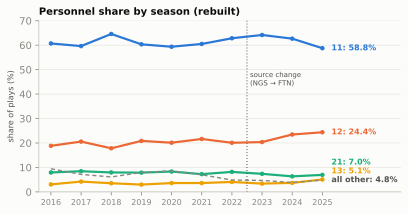
Same numbers as 02-01, to the decimal: 58.8% for 11 personnel in 2025, 24.4% for 12, 5.1% for 13. That is the point of the exercise. A chart you can rebuild is a chart you can extend: change SEASONS, filter joined to one team (joined.posteam == "SEA"), or split by down, and the same dozen lines answer a new question.
Personnel strings record who was on the field by roster position, not what they did, and a coach would add three limits. A sixth offensive lineman reporting as an eligible player (jumbo) is invisible to the backs-and-tight-ends count, so a six-lineman short-yardage set is filed as 11 or 12 personnel; the last column shows that happens on 3–6% of snaps. A player listed as a fullback counts as a back even when he lines up as a tight end, and a tight end used as a fullback counts as a tight end, so the label follows the roster, not the alignment. And personnel is not formation: 12 personnel with one tight end split wide looks to the defense much like 11. The count survives the source break; the meaning was never in the count.
When you reproduce someone else’s chart, three things usually explain a mismatch, in this order: the filter (regular season only? penalties? scrambles?), the counting rule (here, does a fullback count as a back? the course says yes), and the data vintage (nflverse occasionally re-releases past seasons; FTN re-released 2023 and 2024 participation in September 2025). Check them before you suspect the arithmetic.
Film room: league pass rate by down, reproduced
The first chart in this book that predicted anything was Downs, Distance, and Field Position’s grid of how often offenses passed by down and distance in 2025. Here it is again, rebuilt with that chapter’s filter (win probability 20% to 80%, outside the last two minutes of each half) and its buckets:
Show the plotting code
def plot_pass_grid(grid, buckets):
"""01-02's heat grid: pass rate by down (rows) and distance bucket (columns)."""
cmap = LinearSegmentedColormap.from_list("pr", [style.DEFENSE_TINT, "#f6f4ee",
style.OFFENSE_TINT, style.OFFENSE])
fig, ax = plt.subplots(figsize=(6.5, 2.6))
for _, r in grid.iterrows():
i, j = int(r.down) - 1, buckets.index(str(r.dist))
rare = r["size"] < 250
dark = (not rare) and r["mean"] >= 0.8
ax.add_patch(Rectangle((j, 2 - i), 0.96, 0.92, ec="white", lw=1.5,
fc=style.GRID if rare else cmap(float(r["mean"]))))
ax.text(j + 0.48, 2 - i + 0.55, "rare" if rare else f"{r['mean']:.0%}", ha="center",
va="center", fontsize=8 if rare else 10.5, fontweight="bold",
color="white" if dark else style.INK)
if not rare:
ax.text(j + 0.48, 2 - i + 0.24, f"{int(r['size']):,} plays", ha="center", va="center",
fontsize=6.3, color="white" if dark else style.INK_2)
ax.set_xlim(-0.05, 5)
ax.set_ylim(-0.05, 3)
ax.set_xticks([k + 0.48 for k in range(5)], ["1 yd", "2–3 yds", "4–6 yds", "7–10 yds",
"11+ yds"], fontsize=7.5)
ax.set_yticks([2.46, 1.46, 0.46], ["1st down", "2nd down", "3rd down"], fontsize=8)
ax.tick_params(length=0)
ax.grid(False)
for sp in ax.spines.values():
sp.set_visible(False)
ax.xaxis.tick_top()
return fig
def plot_history(by):
"""League pass rate by down, one line per down, labelled at the 2025 end."""
DCOL = {1: style.OFFENSE, 2: style.THIRD, 3: style.DEFENSE}
fig, ax = plt.subplots(figsize=(6.5, 3.0))
for d_, col in DCOL.items():
ax.plot(by.index, by[d_], color=col, lw=2.0, marker="o", ms=2.6)
ax.text(2025.6, by.loc[2025, d_], f"{['', '1st', '2nd', '3rd'][d_]} down: "
f"{by.loc[2025, d_]:.0f}%", va="center", fontsize=8, fontweight="bold", color=col)
ax.set_xlim(1998.5, 2030.5)
ax.set_xticks(range(1999, 2026, 2), [f"{y}" if y % 4 == 3 else "" for y in range(1999, 2026, 2)],
fontsize=7.5)
ax.set_ylim(35, 95)
ax.set_ylabel("pass rate (%)", fontsize=8)
ax.set_title("Pass rate by down, 1999–2025", fontsize=10)
return fign25 = snaps[(snaps.season == 2025) & (snaps.half_seconds_remaining > 120)
& snaps.wp.between(0.2, 0.8) & (snaps.down <= 3)].copy()
BUCKETS = ["1", "2–3", "4–6", "7–10", "11+"]
n25["dist"] = pd.cut(n25.ydstogo, [0, 1, 3, 6, 10, 99], labels=BUCKETS)
grid = n25.groupby(["down", "dist"], observed=False)["pass"].agg(["mean", "size"]).reset_index()
plot_pass_grid(grid, BUCKETS)
plt.show()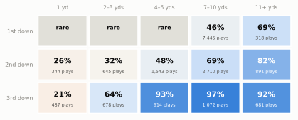
Same grid, same numbers. Now do what 01-02 couldn’t, because it had no code: ask whether the pattern is new. Play-by-play goes back to 1999, so the same question can be asked of 27 seasons. This is a league-wide history, so the cell uses the default garbage-time filter (the two filters differ by a point or two, which a 27-season trend line can absorb). It tracks the first three downs; fourth down mixes “how often do they pass?” with “how often do they go for it at all?”, which is Win Probability and Decision Analysis’s subject:
gt = snaps[snaps.wp.between(0.10, 0.90) & (snaps.half_seconds_remaining > 120)]
by = gt.groupby(["season", "down"])["pass"].mean().unstack() * 100
plot_history(by)
plt.show()
print(by.loc[[1999, 2009, 2019, 2025], [1, 2, 3, 4]].round(1).to_string())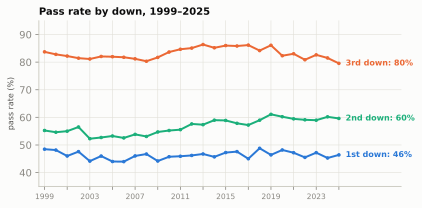
down 1.0 2.0 3.0 4.0
season
1999 48.5 55.2 83.7 42.7
2009 44.2 54.7 81.7 39.7
2019 46.4 61.1 86.1 54.5
2025 46.4 59.6 79.5 56.8A falling third-down pass rate could mean two different things: more third downs that are short (so the same coaches run more), or the same distances with a different call. Split the third downs by distance and the two stories separate:
t3 = gt[(gt.down == 3) & (gt.season.between(2013, 2019) | (gt.season == 2025))].copy()
t3["era"] = np.where(t3.season == 2025, "2025", "2013–19")
t3["dist"] = pd.cut(t3.ydstogo, [0, 1, 3, 6, 10, 99], labels=BUCKETS)
mix = pd.crosstab(t3.dist, t3.era, normalize="columns") * 100 # share of 3rd downs
call = t3.groupby(["dist", "era"], observed=True)["pass"].mean().unstack() * 100 # pass rate
split = pd.concat({"share of 3rd downs (%)": mix, "pass rate (%)": call}, axis=1).round(1)
split.columns = [f"{a}, {b}" for a, b in split.columns]
md_table(split.reset_index(names="yards to go"), digits=1)| yards to go | share of 3rd downs (%), 2013–19 | share of 3rd downs (%), 2025 | pass rate (%), 2013–19 | pass rate (%), 2025 |
|---|---|---|---|---|
| 1 | 11.0 | 13.0 | 27.2 | 21.3 |
| 2–3 | 15.9 | 17.6 | 80.2 | 64.2 |
| 4–6 | 24.7 | 24.2 | 95.8 | 93.1 |
| 7–10 | 29.4 | 27.2 | 97.9 | 97.2 |
| 11+ | 18.9 | 18.1 | 92.3 | 91.5 |
NoteFilm room: the league, 1999–2025
What to notice in charts you built yourself:
- First down is the most stable number in football, on average. In every season from 1999 to 2025, with the game still in doubt, offenses passed on between 44% and 49% of first downs. Twenty-seven seasons of rule changes that favoured the passing game (the illegal-contact emphasis of 2004, the protection of defenseless receivers and quarterbacks) and the spread of shotgun offenses barely moved it. That is an average over every team, personnel group and formation, not a coin flip on every snap: the scorebug alone tells you almost nothing on first-and-10, but the formation tells you a lot, which is why Part 2 exists.
- The passing boom showed up on second down. Second-down pass rate climbed from about 55% to about 60%. Coaches who once ran on second down to “set up third-and-manageable” increasingly throw to convert on second down instead.
- Third down eased after the late 2010s, and it was the call, not the distance. Third-down pass rates peaked around 86% in 2013–2019 and fell below 80% in 2025. The split table shows the mix of third-down distances barely moved; what changed is the call on short yardage, above all third-and-2 or 3, where the pass rate fell from about 80% to about 64%. That fits more under-center play and more quarterback sneaks and pushes; the chapters on third down and the modern era argue the causes.
- Fourth down rose most of all, from about 43% passes in 1999 to about 57% in 2025, and not because teams go for it at longer distances (the typical fourth-down snap is, if anything, shorter). Offenses now throw on about nine in ten fourth downs of two yards or more, where 1999 offenses often ran.12
The lesson for reading a game is the one the 01-02 grid taught: from the scorebug alone, first-and-10 is close to a coin flip and third-and-long is not, and the formation is what breaks the coin flip (How to Watch a Broadcast measured how much). The lesson for working with data is new: the 2025 grid was one season’s snapshot, a few lines of code turned it into a 27-season history, and one more table told two explanations apart. That is where most good questions start.
From a row to a diagram: nflverse meets gridiron
The book’s diagram library, gridiron, and nflverse speak almost the same language. A row gives you the situation (yardline_100, ydstogo), and participation and FTN add the personnel, the formation and the box count. What no row gives you is where each player stood: that needs tracking data, the subject of Tracking Data and the Big Data Bowl. So a diagram built from a row is part data and part illustration, and the caption has to say which part is which. Here is Walker’s run, built from its row:
los = 110 - float(walker.yardline_100)
off = offense("singleback") # 11 personnel, QB under center (FTN: U)
dfn = defense("nickel", "single_high", off) # 3 CB, 2 safeties: five DBs
# gridiron's default puts the nickel over the tight end; a real nickel apexes the slot (H)
dfn = [d.moved(d=4.5, w=-7.0) if d.key == "NB" else d for d in dfn]
grouping = (f"{count(wp_.offense_personnel, {'RB', 'FB'})}"
f"{count(wp_.offense_personnel, {'TE'})} personnel")
def walker_play(pursuit=False):
"""The row as a Play. pursuit=True adds a typical QB fake and defensive pursuit (animation)."""
p = Play(off, dfn, los=los, to_go=float(walker.ydstogo),
title=f"{['', '1st', '2nd', '3rd', '4th'][int(walker.down)]} & {walker.ydstogo:.0f} "
f"at SEA {110 - walker.yardline_100 - 10:.0f} · {grouping} (from the data)")
p.handoff("RB", t=0.8)
p.run("RB", [(2.5, -3.0), (7.0, -7.8), (12.0, -10.5), (31.0, -13.0)]) # off the top: +30
p.block("LT", target="WDE") # hook the end
p.block("H", target="NB") # slot seals the nickel inside
p.block("X", target="LCB") # stalk the corner
p.highlight("RB")
if pursuit:
p.path("QB", [(-1.2, 0.8), (-1.5, 4.8)], delay=0.9) # carry-out fake
p.path("WILL", [(1.5, -4.0), (5.5, -7.0)], delay=0.5) # fast flow, over the top
p.path("MIKE", [(1.5, -3.5), (5.0, -6.5)], delay=0.6)
p.path("LCB", [(0.6, 0.3)], delay=0.9) # fights the stalk block
p.path("FS", [(1.0, -5.0), (2.5, -10.0)], delay=0.6) # alley, then the angle
p.path("SS", [(1.0, -5.0)], delay=0.7) # backside pursuit
return p
row_play = walker_play()
row_play.note(f"+{walker.yards_gained:.0f} yds ↑", at=(12.5, -6.5))
fld = row_play.draw(window=(-9, 17), lateral=(-20, 20))
drop_numbers(fld.ax)
corners = [row_play.to_abs(d_, w_) for d_, w_ in [(0.1, -8.4), (8.2, -8.4), (8.2, 7.6), (0.1, 7.6)]]
bx, by_ = fld.xy(np.array([c[0] for c in corners]), np.array([c[1] for c in corners]))
fld.ax.add_patch(plt.Polygon(np.c_[bx, by_], closed=True, fill=False, ec=style.DEFENSE_DARK,
lw=1.0, ls=(0, (3, 2)), zorder=3))
tx, ty = fld.xy(*row_play.to_abs(3.0, 8.4))
fld.ax.text(tx, ty, "← the box: 8 defenders", fontsize=7, color=style.DEFENSE_DARK, ha="left",
va="center", zorder=7, bbox=dict(boxstyle="round,pad=0.2", fc=style.SURFACE,
ec="none"))
gx, gy = fld.xy(*row_play.to_abs(-5.0, 0.0))
fld.ax.add_patch(Circle((gx, gy), 0.9, fill=False, ec=style.OFFENSE_DARK, lw=1.0, ls=(0, (2, 2)),
zorder=7))
fld.ax.text(gx + 1.6, gy, "pbp: '(Shotgun)'", fontsize=6.8, color=style.OFFENSE_DARK,
va="center", zorder=7)
plt.show()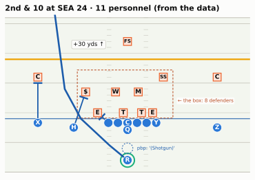
The title is built from the data, so the same cell draws any row you point it at. The picture also produces simulated tracking data: positions ten times a second, in exactly the column layout the Big Data Bowl uses. That is how this book animates hand-drawn plays, and it means the code that animates them will animate real tracking frames unchanged. Here are a few of the running back’s frames from the animated version, which adds a typical quarterback fake and defensive pursuit:
anim_play = walker_play(pursuit=True)
trk = anim_play.to_tracking(game_id=2026020800, play_id=1015) # simulated, BDB-format
print(f"{len(trk):,} rows: {trk.frameId.nunique()} frames x {trk.displayName.nunique()} "
f"tracks (22 players + the ball)")
rb = trk[trk.displayName == "RB"].iloc[[0, 5, 8, 12, 20, 36]]
md_table(pd.DataFrame({"frameId": rb.frameId, "frameType": rb.frameType,
"time": rb.time.map(lambda v: f"{v + 0.0:+.1f}"),
"x": rb.x.round(1), "y": rb.y.round(1), "s": rb.s.round(1),
"dir": rb.dir.map(lambda v: "–" if pd.isna(v) else f"{v:.0f}"),
"event": rb.event.fillna("")}), digits=1)1,518 rows: 66 frames x 23 tracks (22 players + the ball)| frameId | frameType | time | x | y | s | dir | event |
|---|---|---|---|---|---|---|---|
| 1 | BEFORE_SNAP | -0.5 | 27.0 | 26.7 | 0.0 | – | |
| 6 | SNAP | +0.0 | 27.0 | 26.7 | 3.2 | 40 | ball_snap |
| 9 | AFTER_SNAP | +0.3 | 28.2 | 28.2 | 6.5 | 40 | |
| 13 | AFTER_SNAP | +0.7 | 29.9 | 30.1 | 6.5 | 43 | |
| 21 | AFTER_SNAP | +1.5 | 33.5 | 33.9 | 6.5 | 43 | |
| 37 | AFTER_SNAP | +3.1 | 42.9 | 37.7 | 6.5 | 83 |
Each row is one player at one moment. frameType says whether the frame is before, at or after the snap; time counts seconds from the snap. x runs downfield (110 is the goal line Seattle is attacking) and y runs across the field from 0 to 53.3, increasing toward the offense’s left, which is why a run to the left end makes y climb. s is speed in yards per second, and dir is the direction of travel in degrees, clockwise from the +y direction: 0 is toward the offense’s left sideline, 90 straight downfield, 180 toward the right sideline.
trk_show = trk.copy()
ball_on = (trk_show.side == "ball") & (trk_show.time > 0)
trk_show.loc[ball_on, "y"] += 1.1 * np.clip(trk_show.loc[ball_on, "time"] / 0.15, 0, 1) # tucked, beside the marker
show_animation_clean(trk_show, times=[0.0, 0.8, 2.2, 3.6], title="Simulated, BDB-format",
to_go=float(walker.ydstogo))With real Big Data Bowl files the drawing code is the same; only the source of the frames changes. The cell below is not run in this book (the Kaggle files are not redistributed), but it is what you will write in 13-05:
import pandas as pd
from gridiron import bdb, show_animation
trk = bdb.load_tracking("data/bdb/tracking_week_1.csv") # BDB 2025: the 2022 season
plays_bdb = pd.read_csv("data/bdb/plays.csv")
one = bdb.prepare(trk, plays_bdb, game_id=2022090800, play_id=56) # flips plays moving left
show_animation(one, times=[-1.0, 0.0, 1.5, 3.0])
# BDB keys are the league's own game and play IDs, so the pbp row (EPA, WP) joins on
# old_game_id == gameId and play_id == playId. nflverse stores old_game_id as text:
# cast it (pbp.old_game_id.astype(int)) before the merge. This play is 2022_01_BUF_LA,
# play 56 in nflverse: the opening snap, Josh Allen's 6-yard completion to Stefon Diggs.Watch for it on Sunday: the Sunday notebook
You have kept a prediction log since How to Watch a Broadcast: before each snap, a run or pass call with a confidence and the clue you used. Scoring it by hand means writing down every result as well. With nflverse you don’t have to: the data fills in the results the next morning.
During the season, nflverse refreshes the current season’s play-by-play overnight (its README says “nightly”),13 so Sunday’s games are normally in the file by Monday morning and Monday night’s game a day later. Check before you score: print the game IDs you loaded and look for yours. Your weekly routine looks like this (not run here, because the book is built from completed seasons):
import nflreadpy as nfl
from nflreadpy.config import update_config
update_config(cache_mode="filesystem", cache_duration=6 * 60 * 60) # refresh after 6 hours
season = nfl.get_current_season()
week_pbp = nfl.load_pbp([season]).to_pandas()
week_pbp = week_pbp[week_pbp.week == week_pbp.week.max()] # the latest week in the file
print(sorted(week_pbp.game_id.unique())) # is your game in yet?Then join your log to the plays and score it. Here is a worked example on Super Bowl LX, with an example log of fifteen Seattle snaps from the first quarter and the start of the second (Seattle’s last three snaps of the first quarter are missing, as they would be if you went for a drink), written the way you would write it from the couch: the clock as you read it off the scorebug (often a few seconds off), the down and distance, your call and your confidence. The join can’t rely on an exact clock, so it matches each line to the play with the same quarter, down and distance and the nearest clock reading, within 15 seconds:
log = pd.DataFrame(
[(1, "15:00", 1, 10, "R", .60, "sit"), (1, "14:31", 1, 10, "P", .55, "align"),
(1, "13:52", 2, 10, "P", .65, "sit"), (1, "13:27", 1, 10, "R", .55, "sit"),
(1, "13:00", 1, 10, "P", .60, "align"), (1, "12:53", 2, 10, "R", .55, "align"),
(1, "12:08", 3, 7, "P", .85, "sit"), (1, "07:13", 1, 10, "R", .60, "sit"),
(1, "07:08", 2, 10, "P", .65, "align"), (1, "06:24", 3, 6, "P", .85, "sit"),
(1, "03:31", 1, 10, "R", .65, "align"), (1, "02:53", 2, 8, "R", .55, "align"),
(1, "02:09", 3, 7, "P", .85, "sit"), (2, "14:12", 1, 10, "R", .55, "sit"),
(2, "14:06", 2, 10, "P", .60, "sit")],
columns=["qtr", "clock", "down", "togo", "call", "conf", "clue"])
def secs(mmss):
m, s = mmss.split(":")
return int(m) * 60 + int(s)
# On a Sunday, swap df25 for week_pbp and put in your game_id and team
game = df25[(df25.game_id == "2025_22_SEA_NE") & (df25.posteam == "SEA")
& df25.play_type.isin(["pass", "run"]) & df25.down.notna()].copy()
game["t"] = game.time.map(secs)
game["result"] = np.where(game["pass"] == 1, "P", "R") # sacks and scrambles are passes
log["t"] = log.clock.map(secs)
scored = pd.merge_asof(
log.astype({"qtr": float, "down": float, "togo": float}).sort_values("t"),
game.rename(columns={"ydstogo": "togo"}).sort_values("t")[["qtr", "down", "togo", "t",
"result", "epa", "desc"]],
on="t", by=["qtr", "down", "togo"], direction="nearest", tolerance=15)
scored = scored.sort_values(["qtr", "t"], ascending=[True, False])
scored["hit"] = scored.call == scored.result
# The down-and-distance guesser from 01-06: run on short 1st/2nd/4th downs, pass otherwise
dd_run = ((scored.togo <= 3) & (scored.down != 3)) | ((scored.down == 1) & (scored.togo <= 6))
scored["dd_hit"] = scored.result == np.where(dd_run, "R", "P")
print(f"matched {scored.result.notna().sum()} of {len(scored)} log lines")
print(f"You: {scored.hit.mean():.0%} always pass: {(scored.result == 'P').mean():.0%} "
f"down & distance only: {scored.dd_hit.mean():.0%}")
md_table(scored[["qtr", "clock", "down", "togo", "call", "result", "hit", "clue"]]
.astype({"down": int, "togo": int, "hit": str}))matched 15 of 15 log lines
You: 67% always pass: 60% down & distance only: 60%| qtr | clock | down | togo | call | result | hit | clue |
|---|---|---|---|---|---|---|---|
| 1 | 15:00 | 1 | 10 | R | R | True | sit |
| 1 | 14:31 | 1 | 10 | P | R | False | align |
| 1 | 13:52 | 2 | 10 | P | P | True | sit |
| 1 | 13:27 | 1 | 10 | R | P | False | sit |
| 1 | 13:00 | 1 | 10 | P | P | True | align |
| 1 | 12:53 | 2 | 10 | R | R | True | align |
| 1 | 12:08 | 3 | 7 | P | P | True | sit |
| 1 | 07:13 | 1 | 10 | R | P | False | sit |
| 1 | 07:08 | 2 | 10 | P | P | True | align |
| 1 | 06:24 | 3 | 6 | P | P | True | sit |
| 1 | 03:31 | 1 | 10 | R | R | True | align |
| 1 | 02:53 | 2 | 8 | R | R | True | align |
| 1 | 02:09 | 3 | 7 | P | P | True | sit |
| 2 | 14:12 | 1 | 10 | R | P | False | sit |
| 2 | 14:06 | 2 | 10 | P | R | False | sit |
Ten of fifteen, against nine for the down-and-distance guesser and nine for “always pass.” Fifteen snaps prove nothing, of course; Expected Points, EPA, and Success Rate shows how many plays it takes before a rate means anything, and Film Study: All-22, Charting a Game, and Scoring Yourself scores a season’s log properly, with the confidence column. But the habit is the thing: the log you keep on Sunday is a table, and the results arrive as a table on Monday.
TipWatch for it: the Sunday notebook
- During the game: keep the log exactly as in 01-06 (quarter, clock, down, distance, call, confidence, clue). Write the clock as the scorebug shows it just before the snap; being a few seconds off is fine, because the join looks for the nearest play.
- Monday morning: load the newest week of play-by-play with a short cache, filter to the game and the offense you watched, and run the join above. Check the match count first: a log line that finds no play usually has a mistyped down or distance.
- Score it three ways: your hit rate, “always pass,” and the down-and-distance guesser. Beat both, and you are reading something the scorebug doesn’t show.
- Read your misses. Sort the misses by your confidence and read their
desctext. Confident misses on first-and-10 usually mean you missed a clue in the formation; misses on third down usually mean a draw or a screen you didn’t see coming. - Keep the season in one file. Append each week’s scored log to a CSV. By midseason you can group by
clueand see which of your reads actually work.
Predict the play
These drills ask you to predict the data as well as the football: what the row will say, and what your filters will do with it. The diagrams use the course’s position letters: on offense Q is the quarterback, R the running back, X, Z and H wide receivers, Y and U tight ends; on defense E is an end, T a tackle, S (Sam), M (Mike) and W (Will) the linebackers, C a cornerback, $ the nickel back, and FS and SS the safeties.
TipPredict the play 1: write the row
Third-and-2 at the opponent’s 40, second quarter, 2025. The offense brings two tight ends and lines up under center; the defense answers with its base 4-3 and one deep safety. The back takes the handoff and gains 3 yards. Before you look: what will this play’s row say for play_type, pass, rush, down, ydstogo, yardline_100, yards_gained and first_down? What will the next snap’s down, ydstogo and yardline_100 be? And what will participation’s offense_personnel string say?
off = offense("ace")
dfn = [d.moved(d=5.5, w=-6.5) if d.key == "SS" else d.moved(d=5.0) if d.key in ("LCB", "RCB")
else d for d in defense("4-3_over", "single_high", off)]
p = Play(off, dfn, los=70, to_go=2, title="3rd & 2 at the opponent's 40")
p.highlight("RB")
p.highlight("Y", "U", color=style.LINE_TO_GAIN)
drop_numbers(p.draw(lateral=(-19, 19), window=(-9, 15)).ax)
plt.show()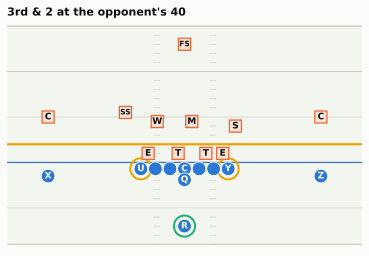
TipAnswer
The row records the situation before the snap and the result in separate columns: play_type = run, pass = 0, rush = 1, down = 3, ydstogo = 2, yardline_100 = 40, yards_gained = 3, first_down = 1. The next snap is a new series: down = 1, ydstogo = 10, yardline_100 = 37, because the ball moved 3 yards closer to the goal line and yardline_100 counts down as an offense advances. Say “the next snap”, not “the next row”: a timeout or the end of the quarter can sit in between, so in code you take the next row that has a down. The EPA is positive: a third down became a fresh first down.
The personnel string is in FTN’s 2025 format, every player by roster position: "1 C, 2 G, 1 QB, 1 RB, 2 T, 2 TE, 2 WR". Before 2023 the same play would read "1 RB, 2 TE, 2 WR". Either way the parser above returns 12 personnel.
One more trap: yardline_100 falls as the offense gains ground, so “plays inside the 20” is yardline_100 <= 20, not >= 80, and where a play ended is yardline_100 - yards_gained only for an ordinary run or completion (a turnover or a penalty breaks it, which is why nflverse also stores end_yard_line).
TipPredict the play 2: the scramble
Third-and-8 at your own 35. The offense is in the shotgun with three receivers; the defense plays two-high man, every receiver covered. The quarterback finds nothing, escapes to his right and runs for 9 yards and a first down. How will nflverse file this play? Will it count as a pass under play_type == "pass"? Under pass == 1? Which should a pass-rate chart use?
off = [q.moved(w=-2.3) if q.key == "RB" else q for q in offense("gun_2x2")]
dfn = [d.moved(d=5.0, w=-6.5) if d.key == "WILL" else d for d in defense("nickel", "two_high", off)]
p = Play(off, dfn, los=45, to_go=8, title="3rd & 8 at your own 35")
p.route("X", [(0, 0), (18, 0)])
p.route("Z", [(0, 0), (18, 0)])
p.route("H", [(0, 0), (10.5, 0), (10.5, 2.5)]) # slots start 1.5 yards off the
p.route("Y", [(0, 0), (10.5, 0), (10.5, 2.5)]) # ball: outs at 9, past the sticks
p.block("RB", pts=[(1.5, 1.5)]) # stays in to protect
for dfd, rec in [("LCB", "X"), ("RCB", "Z"), ("NB", "Y"), ("WILL", "H"), ("MIKE", "RB")]:
p.man(dfd, rec)
p.path("QB", [(-2.0, 0.0), (-1.5, 5.0), (14.0, 6.0)])
p.highlight("QB")
p.note("scramble: +9", at=(12.0, 0.5))
drop_numbers(p.draw(lateral=(-19, 19), window=(-9, 15)).ax)
plt.show()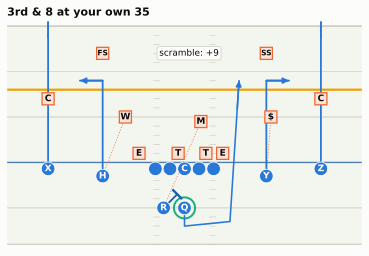
TipAnswer
nflverse files it as play_type = run, because the quarterback carried the ball, with qb_scramble = 1, qb_dropback = 1, pass = 1 and rush = 0. So play_type == "pass" counts it as a run, and pass == 1 counts it as a pass. A chart about play-calling should use pass == 1: the offense called a pass, and the defense defended one. Over the 2025 regular season that is 1,089 plays (the scramble row of the flags table), and the league’s pass rate on runs and dropbacks was 60.1% by the flag against 56.8% by play_type. A chart about who carried the ball, such as a quarterback’s rushing yards, is different: there the scramble yards are rushing yards, as the box score says.
The football half: 2-Man is the coverage most exposed to this play. Every underneath defender is running with a receiver, his back to the quarterback, so when the quarterback breaks the pocket nobody is facing him. That is why defenses that play man against a mobile quarterback add a spy or tell the rushers to keep him contained.
TipPredict the play 3: called back
First-and-10 at your own 25. The offense runs inside zone to the right and the back breaks it off right tackle for 12 yards, but there is a flag at the left end of the line: offensive holding on the left tackle, accepted. In nflverse, what is this play’s play_type, and will your “real plays” filter keep it? What sign will its EPA have? Would the nflfastR guide’s filter, pass == 1 | rush == 1, keep it? And would your answer change if the hold had been by a receiver 15 yards downfield?
off = offense("singleback")
MOVE = {"SDE": (1.0, 5.8), "SAM": (4.2, 7.5), "WDE": (1.3, -4.9), "SS": (8.5, 8.5)}
dfn = [d.moved(*MOVE[d.key]) if d.key in MOVE else d
for d in defense("4-3_over", "single_high", off)]
p = Play(off, dfn, los=35, to_go=10, title="1st & 10 at your own 25")
p.handoff("RB", t=0.8)
p.run("RB", [(4.5, 2.4), (7.5, 4.0), (11.5, 4.4), (19.0, 5.0)])
for blk, tgt in [("Y", "SDE"), ("RG", "SDT"), ("RT", "MIKE"), ("C", "WDT"), ("LG", "WILL"),
("LT", "WDE")]:
p.block(blk, target=tgt)
p.highlight("RB")
p.highlight("LT", color=style.DEFENSE)
p.note("+12 yards", at=(12.0, 9.5))
p.note("flag: holding (LT)", at=(-4.5, -9.5))
drop_numbers(p.draw(lateral=(-19, 19), window=(-9, 16)).ax)
plt.show()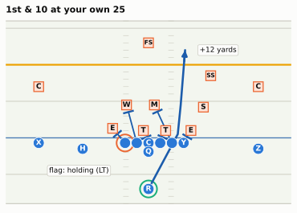
TipAnswer
The play never happened, officially. nflverse records it as play_type = no_play with penalty_type = “Offensive Holding”, yards_gained = 0 and rush = 1 (the run is still flagged). The course’s filter, play_type in pass or run, drops it; pass == 1 | rush == 1 keeps it. Its EPA is clearly negative: instead of first-and-10 at the 37, the offense faces first-and-20 at its own 15 (a foul at the line on a run is enforced from the previous spot). In the 2025 regular season there were 176 holds like this one that wiped out runs, and they cost -1.12 expected points each on average.
A hold downfield is a different row. When a receiver, or a lineman who has climbed to the second level, holds beyond the line of scrimmage, the foul is enforced from the spot of the foul, so the run counts up to that spot: the row stays play_type == "run" with penalty = 1, and your filter keeps it. That was 62 of the 238 accepted offensive holds on designed runs in 2025, about a quarter. If you want “runs without penalties”, filtering on play_type is not enough; add penalty == 0.
Which filter is right depends on the question. “How good is this team’s running game?” arguably should charge the offense for its holds, which is why nflfastR’s guide keeps penalty snaps for EPA. “How often does this team call a run?” is cleaner without them. Expected Points, EPA, and Success Rate measures the difference: leaving penalty snaps out makes passing look a little worse, because defensive pass interference is mostly a deep-ball outcome. Neither choice is wrong. Not knowing which one you made is.
Takeaways
- nflverse is free, public, reproducible football data: play-by-play for every play since 1999, plus schedules, rosters, participation and FTN charting, with nflfastR’s models (EP, EPA, WP, CPOE, xpass) on every row. In Python you load it with nflreadpy (Polars;
.to_pandas()when you want pandas), not the archivednfl_data_py. - A row is a scorebug plus a result plus model estimates, and not every row is a play. Situation columns (
down,ydstogo,yardline_100) describe the moment before the snap;yardline_100is the yards still to go for a touchdown, which is why it falls as an offense advances. - Choose rows with
play_type, classify them withpass == 1, which includes sacks and scrambles, and decide on purpose what to do with no-play penalties, downfield holds, kneel-downs, two-point tries and garbage time. Use win probability 10–90% (outside the last two minutes of each half) by default and for efficiency, 20–80% for comparing play-callers. State your filter every time. - Participation and FTN charting add who was on the field and how they lined up, but participation comes from two suppliers, with a source break between 2022 and 2023: the formation labels, personnel strings and coverage calls all change. Mark the break, translate to what both sides can say (three NGS labels become “under center”), and cross-check against a source that doesn’t break. During the season there is no personnel data at all.
- Reproduce before you extend. Rebuilding 02-01’s personnel chart and 01-02’s pass grid to the decimal proves the pipeline; the same dozen lines then answer new questions, such as 27 seasons of pass rate by down.
- Data can’t tell you where players stood. A diagram built from a row is part data, part illustration, and the caption must say which; real positions need tracking data.
Connections
Builds on: Downs, Distance, and Field Position (down, distance, field position and the EPA primer, whose pass-rate grid we rebuilt) and Personnel (personnel groupings and the season-by-season chart). The prediction log comes from How to Watch a Broadcast; the formation vocabulary (shotgun, under center, pistol) from Formation Rules and Vocabulary.
Sets up:
- Expected Points, EPA, and Success Rate: builds the
epandepacolumns from scratch with this chapter’s data and filters. - Win Probability and Decision Analysis: the
wpcolumn, and the fourth-down decisions behind the chart above. - Tendencies: PROE, Personnel, Motion, and Coverage:
xpassandpass_oe, neutral situations, and coverage charts that respect the source break. - Tracking Data and the Big Data Bowl: the real positions that a play-by-play row can’t give you, loaded with
gridiron.bdb. - Film Study: All-22, Charting a Game, and Scoring Yourself: the season’s prediction log, scored properly.
If you want to go deeper: the nflreadr data dictionaries for play-by-play, participation and FTN charting (the column definitions, straight from the source); nflfastR’s “A beginner’s guide to nflfastR,” written in R but easy to translate, for the standard filters; Ben Baldwin’s Open Source Football posts for how the models are built; and the nflverse Discord and GitHub issues, where the maintainers answer questions about data quirks.
NoteGo deeper: a checklist for any new nflverse question
- Which table, which seasons? Check the timeline above before you promise a 2016–2025 chart of something that starts in 2018.
- Which rows? Regular season?
pass == 1orplay_type? Penalty snaps? Two-point tries? Garbage time? - Which key? pbp
game_id+play_idmatch participation’snflverse_game_id+play_idand FTN’snflverse_game_id+nflverse_play_id;gsis_idfor players;old_game_idfor the Big Data Bowl. Print the match rate after every join. - Does a known total come out right? A player’s yards, a team’s record, a published league rate.
- Does the series cross a source break? Mark it, translate it, or cross-check it.
- Say all of the above in the caption.
Super Bowl LX, February 8, 2026, Levi’s Stadium: Seattle 29, New England 13; Kenneth Walker III was the game’s MVP with 27 carries for 135 yards (https://en.wikipedia.org/wiki/Super_Bowl_LX; course fact sheet). The play is nflverse game
2025_22_SEA_NE, play 1015.↩︎nflfastR’s CRAN description (“functions to efficiently access NFL play-by-play data from nfl.com”): https://cran.r-project.org/package=nflfastR; its README credits the JSON-formatted NFL play-by-play feeds back to 1999 and notes that the hosted data “are updated nightly during the season”: https://github.com/nflverse/nflfastR.↩︎
Maksim Horowitz, Ronald Yurko and Samuel Ventura, nflscrapR (R package): https://github.com/maksimhorowitz/nflscrapR; the expected-points and win-probability models are described in Ronald Yurko, Samuel Ventura and Maksim Horowitz, “nflWAR: A reproducible method for offensive player evaluation in football,” Journal of Quantitative Analysis in Sports 15, no. 3 (2019): 163-183, https://doi.org/10.1515/jqas-2018-0010.↩︎
nflfastR documentation (authors Sebastian Carl and Ben Baldwin): https://www.nflfastr.com/; nflfastR was announced by Ben Baldwin on April 27, 2020 (tweet embedded in Thomas Mock, “nflfastR + dbplyr + RSQLite,” The Mockup blog: https://themockup.blog/posts/2019-04-28-nflfastr-dbplyr-rsqlite/), and first published on CRAN on September 1, 2020 (https://cran.r-project.org/package=nflfastR); Ben Baldwin, “nflfastR EP, WP, and CP models,” Open Source Football, September 28, 2020: https://www.opensourcefootball.com/posts/2020-09-28-nflfastr-ep-wp-and-cp-models/; the nflverse organisation: https://github.com/nflverse.↩︎
nflverse, nfl_data_py (archived repository; README: deprecated in favour of nflreadpy, no further maintenance): https://github.com/nflverse/nfl_data_py.↩︎
nflverse, nflreadpy: https://github.com/nflverse/nflreadpy; version 0.1.5 released on PyPI on November 19, 2025 (https://pypi.org/project/nflreadpy/), per the course fact sheet, checked October 2026.↩︎
nflfastR, “A beginner’s guide to nflfastR” (its early-down pass-rate example filters on
wp > .20 & wp < .80 & down <= 2 & qtr <= 2 & half_seconds_remaining > 120, “excluding the final 2 minutes of the half when everyone is pass-happy”; checked October 2026): https://nflfastr.com/articles/beginners_guide.html.↩︎nflverse, participation data dictionary: https://nflreadr.nflverse.com/articles/dictionary_participation.html; release notes for the FTN-sourced files (2023 and 2024 re-released in September 2025, 2025 in February 2026) at https://github.com/nflverse/nflverse-data/releases; per the course fact sheet, checked October 2026.↩︎
nflverse, FTN charting data dictionary: https://nflreadr.nflverse.com/articles/dictionary_ftn_charting.html (
is_motion: “motion occurred on the play before or at the time of the snap”). FTN Data: https://ftndata.com/. Licences: the nflreadpy README says most nflverse data is CC-BY 4.0 and the FTN data CC-BY-SA 4.0 (https://github.com/nflverse/nflreadpy#license); nflreadr 1.5.0’s release notes say the FTN-supplied participation data is CC-BY-SA 4.0 and should be credited “to FTN Data via nflverse” (https://cran.r-project.org/web/packages/nflreadr/news/news.html). Credit FTN charting the same way.↩︎Course calculation from nflverse participation data, regular-season runs and dropbacks 2016-2025 (formation labels, personnel strings, coverage labels and man share by season), matching the course fact sheet’s checks of October 2026.↩︎
Course calculation from nflverse play-by-play (
shotgun) and FTN charting (qb_location), regular-season runs and dropbacks with a down, 2016-2025. The same trend in other sources: NFL Next Gen Stats reported offenses using fewer than three wide receivers on 41.7% of 2025 plays (James Reber, NFL.com, “NFL trend watch: heavy personnel could shape Super Bowl LX showdown between Patriots and Seahawks”): https://www.nfl.com/news/nfl-trend-watch-heavy-personnel-could-shape-super-bowl-lx-showdown-between-patriots-and-seahawks.↩︎Course calculation from nflverse play-by-play, regular-season fourth-down runs and dropbacks with the course’s garbage-time filter: 171 snaps in 1999 (30% at four or more yards to go; pass rate 55% at 2 yards, 67% at 3, 77% at 4 or more) and 437 in 2025 (18% at four or more; 89%, 96% and 95%).↩︎
nflfastR README (“updated nightly during the season”): https://github.com/nflverse/nflfastR; checked October 2026.↩︎